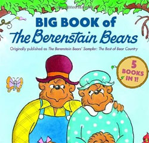
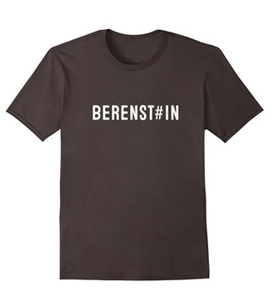

However, the books in this timestream are Berenstain Bears. A, not E, in last syllable.
That’s not what most visitors seem to remember. The following are among the many memories people have shared, sometimes as part of longer comments. The vast majority recall the books as Berenstein Bears.
In March 2014, JM said:
I too clearly remember it as ‘Berenstein’ even though I never read the books. Why would anyone change that? Seems irrelevant.
Jennifer Shepherd said:
I had overlooked the material here about people remembering the popular children’s books as being Berenstein Bears, not Berenstain Bears; I just saw that today and it blew my mind! I was a meticulous spelling nerd as a child and have ZERO doubt that the books the kids were reading were about the Berenstein Bears. I tried to research Library of Congress and trademark info today, to see if maybe there had at some point been a changeover due to multiple parties using variations of the name. Nope, the official records state that the series was always Berenstain, after the very real last names of the authors (Berenstain.)
In April 2014, Tee said:
I notice changes everyday. For one I saw the Berenstein/Berenstain Bears thing mentioned and I always knew them is Berenstein.
Nat replied:
Berenstain Bears?! I could’ve sworn it was spelt Berenstein too. Wow, how peculiar…
In May 2014, Heathyr said:
…We both remember berestein bears rather than berenstain,
In June 2014, Louis asked:
Does anyone remember the Berenstein Bears? I do. Although somewhere along the line the name has changed to the Berenstain Bears. No record of “stein” which is definitely how it was when i was younger. No question about it.
Matt said:
I specifically remember Berenstein Bears, not Berenstain Bears. My wife didn’t remember, but I did, I liked them a lot.
Mary Garcia said:
…it was always Berenstein and now it is Berenstain. My 20 year old daughter, who had ever Bear book was just as creeped out when I showed her this, she said “no Mom it was always Berenstein”. I joked that at least we came from the same reality together, so I took great comfort in that.
Sandi said:
It was always Berenstein bears for me. I was a voracious reader as a child and pronounced it as either “stine” or “steen” I eventually settled with “steen”. Now if it had been spelled “stain” there would have been no question of my pronunciation of that. I noticed this difference about 5 years ago and chalked it up to new editions being re-labelled. Now it seems it was NEVER called that to begin with.
Stephen Comer said:
I would like to say that I VERY CLEARLY remember “Berenstain Bears” being Berenstein Bears. I very specifically remember it being pronounced “STEIN” on the show.
aldooze said:
Another one worth mentioning is the children s books about the ‘Berenstain Bears’ . Every single person I have talked to swears it was spelled ‘Berenstein Bears” .
LadyJEM5 said:
While my children were small my mother & I purchased the entire Berenstein Bears library collection. At no time have I ever known them to be anything other than that, however I will confirm this for my own peace of mind by digging them out of storage.
John said:
Absolutely 100%. Berenstein/stain had me spooked
KingKen6669 said: 
I, too, remember pronouncing Berenstain – “Burn-steen” my entire life. The books were a big part of my childhood; my grandmother read them to me until I was much too old, and i enjoyed every second of it. I was quite surprised when I saw the thread and the claim – it’s a hard thing to swallow. My first thought, naturally, was “i’m misremembering” – that wasn’t enough, I tried to make some sense of it in my post here.
When did this Berenstein vs Berenstain debate begin? I can remember an event less than 5 years ago – I was referencing them in a text message to a friend, and do remember looking up the correct spelling on my phone – I remember it clearly being STEIN. However, part of me feels that i’m buying into the “crazy”, and the other part of me trusts that i’m not mis-remembering.
Mina said:
I also KNOW without a shadow of a doubt, that the childrens books were the “Berenstein” Bears, not the “Berenstain” Bears. I am a readaholic, and have been since I was 4 years old. I read every single word, just as I have done with these comments! ALL the time, I was reading BERENSTEIN, and our next-door neighbor was Mr. Steinman (pronounced “STINE”) so I asked my grandmother if it was pronounced Beren-STINE or Beren-STEEN. She said it was pronounced “Bern-Steen” Bears, different than Mr. Steinman’s name… I would never have asked her how to pronounce it, if it had been spelled “Berenstain”!
Brian said:
Other things I remember are Berenstein…
However, like most of these memories, readers aren’t in lockstep, universal agreement.
In March 2014, Steph said:
I very vividly remember The Berenstein Bears being called The Berenstain Bears.
In June 2014, DG said:
As clearly as my memory’s of Billy Graham’s death are, I still remember them as the BerenSTAIN Bears.
—
So, what do you remember, Berenstein or Berenstain?
I very vividly remember The Berenstein Bears being called The Berenstain Bears.
http://ptl.stparchive.com/Archive/PTL/PTL09121985P06.php
ctrl f to search berenstein bears and it was there in the tv guide.
Adele, thanks for this link! For anyone who clicks to see it, the Berenstein Bears (TV show premiere) listing is in the column showing TV shows at Saturday morning, 7 AM, on channels 4 & 9. And it is spelled “Berenstein Bears.”
This is especially interesting since those kinds of listings are (and were) generally supplied by the network to the local stations, who then forward them to local newspapers (who copy directly from the originals.)
Ok, I think I understand the link to some of the easter eggs presented in this newspaper, indicated by years having it spelled as Berenstein, but others escape me.
04/19/1984 The beginning of the change:”Easter Suprise”- season won’t change. In a vortex there is a center where it seems that things are not moving. There are two sides. For instance, one side spins counterclockwise and the other clockwise but both depend on the perception. If one were to take a ball point pen and place the ball portion in the center of their hand and turn it one side would appear to be moving in a clockwise pattern and the other counterclockwise.
09/19/1985: Michael J Fox- star of Back to the Future
09/26/1985: Golden Girl Estell Getty (relevance ? ?) actor died due to Lewy body disease which is associated with Parkinson’s (like actor Michael J Fox). Lewy bodies detectable in post mortem brain histology(living dead). She has been in movies and series that I am not familiar with so can not reference at this time.
Not sure if this date for the newspaper has anything to do with Betty White who is reported to be currently living. She was born in 1922 and Getty in 1923 but Getty seemed to have played the “older” mother type figure in Golden Girls.
10/03/1985: Don Johnson, Cybill Shepherd, William Russ, Judith Ivey, Jason Robards, and Ava Gardner. Ava Gardner, Cybill Shepherd, and Jason Robards stick out to me but I can not make the link right now. However, it seems that everyone in the picture plays an important role in this easter egg.
10/09/1986: **Change of Pace** There was a shift in the other direction. Article has caption of Justine Bateman and Roger Wilson. I am not familiar with these actor but Roger Wilson shares similar phenotype to Michael J Fox (his doppleganger?). This year has “BerenSTAIN” in the actual print work but Berenstein in the hidden detail portion at the bottom of the page.
10/10/1985: Incorrigible- the shift could not be easily changed and print went back to “Berenstein”.
11/28/1985: BerenSTAIN Bears the Christmas Tree in print, Papa bear chops down tree (tree of knowledge/good& evil?). This is the last date were STEIN is referenced. TV guide has a couple of interesting programs for this date such as Dr Who City of Death, Sudden Impact, The Lion, the Witch, and the Wardrobe, and Billy Graham Crusade.
Anyone else, have some insight regarding this strange occurrence/posting archive by Ponchatoula Times?
Oh yeah, crossword significance “Eli” (El). Puzzle to figure it out. (Not really related but have you watched old films you use to like–stuff is embedded. Alice in Wonderland 1985 people version. Getting a bit tired of researching this type of thing noticing that it has always been around)
Daniel, I’m not sure I follow the connections in these observations, but I definitely commend you for putting in many hours uncovering these quirky details.
And, I have no idea why I think it might be helpful (if it even is), but the recurrence of Michael J. Fox in your notes reminded me that — when he had to choose a middle initial to join Actors Equity (or perhaps another group, necessary to be in a major production), he selected “J” as a reference to Michael J. Pollard. (A long-time actor who’s been in everything from Star Trek, the original series, to Eerie, Indiana, and a lot more. My favorite was probably his role in The Russians are Coming, The Russians are Coming.)
Michael J. Pollard’s bio (see IMdB http://www.imdb.com/name/nm0689488/ ) may give you more dots to connect. He was always a useful reference when playing “Six Degrees of…”.
I can’t remember how the Berenstain Bears name was spelt, but after reading these theorys i can say I’ve always pronounced it “stein” or “steen” even my older sister. “Stain” is way off from “stein” or “steen” my sister at least would have caught that and made fun of me for pronouncing it wrong. But we both always said Barenstein. Just three weeks or so ago i helped with a yard sale and i was looking at the kids books their and their were Berenstain Bears books. I read the name and though i was pronouncing it wrong when i was young. But my sister would have made fun of me and my parents were strickt about my pronouncing because i had a lisp. Even my parents said Berenstein, not Berenstain.
Fiona, did you notice the “Golden Girls” premiere was that date also? Seems odd , there are lots of multiple death dates ect. surrounding that cast. 1985 was one of the years I listed. In fact it was when I first started noticing things , and writing them off. Mike H.
Well, it sure is; Saturday morning, 7:00am.
Is this photo manipulated, I wonder?
How odd. I live in Ponchatoula and just stumbled upon this.
I found it! Crazy! I remember it as Berenstein bears too, seems like there’s not much evidence of it now but I distinctly remember it as Berenstein.
Note the entry immediately under it, the description for ‘Never Say Never Again’ has a spelling mistake where they say “terrorist” instead of “terrorists”. User error is a possibility all considered.
I 100% remember them as berenstein bears because, as already mentioned, I always went between st eye n and st ee n when I was a kid and would not have had that issue had it been stain. I vividly remember being at walden books in the mall where I grew up a few years after I outgrew the books and noticing “berenstain” and being upset that they changed the spelling and how stupid “berenSTAIN” sounded. I couldn’t figure out why they did that and I went to get my dad from the back of the store to look at the books. He was also surprised and said someone must have not wanted it to sound jewish and that he thought the name change was bad as well.
I am calling him tomorrow and asking him and my mom seperately to name “those bear books from when I was a kid” and see what they say.
This is nuts! I KNOW it was berenstein!!!
Justin Danger — and others — the regular Jewish references amaze me.
As a genealogist, I know that the difference between “Berenstein” and “Berenstain” is often down to the clerk who wrote the name of the emigrant when compiling each ship’s passenger lists. (In the USA, people often refer to this as the “Ellis Island” spelling. That was one of the most popular American ports of entry in the 19th century. It’s where related passenger lists were filed.)
More about why spellings vary, that have nothing to do with religion, per se: http://www.findmypast.com/content/name-variations
And, if you want to see the wide range of spellings related to the Berenstein surname, see this odd website that seems to help people find relatives in Argentina. http://www.hebrewsurnames.com/BERENSTAIN The diverse, related spellings is astonishing. (Yes, that’s an odd little site. Let’s not use it as a reason to go off-topic. We’re talking about alternate memories about the Berenstein/Berenstain Bears books, not religion, past political conflicts, etc.)
Per Ancestry.com’s study of the 1920 census ( http://www.ancestry.com/name-origin?surname=berenstein ), the Berenstein surname was very localized in the U.S. and most Berenstein families’ roots seem to be in Russia, then Sweden. So, while people who recall anti-Semitic sentiments from WWII may want to frame spellings in terms of the Jewish faith, it’d be more logical (or equally illogical) to say “they didn’t want to seem Russian” or “they didn’t want to seem Swedish.”
The Berenstain spelling shows a very different profile at Ancestry.com: http://www.ancestry.com/name-origin?surname=berenstain
The number of records (not limited to 1920) is in sharp contrast as well: 6,293 records for Berenstein v. 349 for Berenstain.
So, at least in genealogical records (vital records, census, etc.), the Berenstein spelling has been far more popular in the U.S. That may be a factor in our memories, or it may not.
Nevertheless, the difference between Berenstein and Berenstain nothing to do with religion. Both are equally Jewish or Christian or Agnostic or whatever spiritual label you choose. If someone changed their surname from Berenstain to Berenstein, the most likely reason was to make life simpler, and not have to keep correcting teachers, clerks, etc., who defaulted to the more popular Berenstein spelling.
This is important: I’m not disputing what a parent or grandparent (or other person) said to explain the apparent spelling change. I’m just trying to reduce the faith-related comments (many that I cannot approve, even if they weren’t deliberately inflammatory), and comments suggesting the authors’ names and books’ titles were changed.
I think we’ve established that the books weren’t changed, and this isn’t a conspiracy to confuse people who grew up with the Berenstein Bears books.
It’s something else, and it seems to be be related to the Mandela Effect.
I’d love to find another reason why so many people remember the Berenstein Bears, like a massive distribution of imported counterfeit books that used the wrong spelling.
So far, that hasn’t emerged.
Sincerely,
Fiona Broome
Thank you for this! The topic intrigues me. I clearly remember the name of the book being spelled Berenstein. But I question everything so much, that I would seriously second guess my own memory, when all available evidence points in the opposite direction. I know a lot of people who remember it as I do. This might not prove anything, but just having it in writing somewhere means something. Now I just gotta figure out what that is…
Ok I have to weigh in here…it was absolutely (100% Certainty) spelled Beren-s-t-e-i-n. No question. I was not only a spelling Nerd. I was in the National Spelling Bee every single year. Made it to finals without studying. Also only missed 1 question on the SAT in the verbal section. I got a 710. I have always tested in the top 1 – 3 % of the population. By the time I had graduated 4th grade I had read nearly EVERY classic novel (not kids books) in existence. I have a photographic memory when it comes to words. Something strange went on here… wow….
Go to 80s cartoons and it changes, April 7th 2001, its stein and if you click forward it all changes. Weird…
So weird that you mentioned 2001. My little sister started kindergarten that year. She got all my old hand me down books. Including the Berenstein Bears. After a few weeks of her getting into the lot of books i gave her i asked her what her favorites were. She said a few names of books that i don’t remember but then she said something that caused us to fight.. she said the BerenSTAIN Bears! And she said it like that, over pronouncing the end and in a loud tone of voice. I tried to correct her saying no, its BerenSTEIN and she would have none of it. I remember showing her the book covers too trying to get her to sound out the name. She kept saying Stain.
https://pbs.twimg.com/media/CLm0fcTVAAAtpnt.jpg
Well, yes, anyone can Photoshop a picture to change the titles. I’ve seen several photos like this, each displaying “Berenstein” Bear books.
What hasn’t happened so far is someone actually coming forward with a copy of any book that can be confirmed as an original with the Berenstein title. Surely the publisher/s would have leaped on this PR opportunity, if they could join the fray.
I’m not saying all the Berenstein Bears book photos are fake, but — due to Photoshop, GIMP, etc. — a photo isn’t proof of anything.
Someone forgot to photoshop one. “PET SHOW” at the end has the A still. However left side shows an E. This makes the photo an utter fake to me.
Good catch, JKO. I have so little patience with these fake photos, I don’t scrutinize them as carefully as I should. I see uneven pixelation, uneven coloring or text, and — in general — preposterous claims with no real-life support, so I sigh and close that open tab.
When I was a child I had a ton of these books and watched the cartoon series that they had. I vividly remember that cursive title always saying “The Berenstein Bears.” Without a doubt. In fact, my father, who is an English major and writer, used to read the books to me every night and he pronounced it “Berenstein.” I tend to believe him. He’s a freak about grammar and pronunciation.
I, like a few others have mentioned, do remember a few years back seeing a ‘newer’ series of books and TV series where it was spelled “Bernstain” and thinking “hmm, that’s strange. They changed the name. It used to be Berenstein when I was a kid.” But didn’t give it much thought. It wouldn’t be unusual for them to change the name all of the sudden. However, the theory that it was never Berenstein to begin with creeps me out majorly.
This isn’t a coincidence that this many people ALL remember it being spelled with an “E”. I have a great memory. I pride myself on that. I remember a lot of things from my childhood and The Berenstein Bears is one of them without a shadow of a doubt for me.
i remember it as Berenstein Bears! i remember because when i was younger i would always pronounce it Bare-en-Stine…..the hell is going on here
I am 43 years old and clearly remember the Berenstein Bear family very well from my own childhood. My boys, ages 18, 14, and 10 also remember them as the Berenstein Bears. Now, it was spelled Berenstein, but I (and everyone else I knew) either pronounced it Berenstain — Long A sound at the end, or Berenstine–long I sound for the last syllable. Like Albert Einstein. Never, ever, have I seen the “ai” spelling, and have never heard it pronounced with the long “E” sound. I don’t know what is going on, but it’s weirding me out.
All my boys agreed with me; then we pulled out the old books. Oddly enough, they said BerenSTAIN!!!!!!!!! I am dumbfounded right now.
The bookstore I was in with my dad when we noticed the spelling change on the books closed in 97 so the universe changed some time before 97.
1997 is when John Titor arrived….
I was born in 95 and remember it always being ei. We all must shift realities at different times?
Ok, we first need to find out the difference in recognition to find out where the time split, I imagine some (older people) will think Bernst’a’in is the correct spelling, then we need to keep whittling it down till certain ages remember it as such. Then we will know which time is “our real timeline”. Perhaps someday we can slip over to our “original” timeline. Does that make sense?
Kyle, that’s a good idea to test! However, I’m not sure ages will be easy to poll. There could be steep challenges reaching enough credible older people, and literacy is a factor at any age.
At the moment, the comments level is approaching a point where I can write a few new articles… if this lull continues into the upcoming week, that is. I’ll do my best to launch a poll relating age & Berenst_in spellings.
I was born in 1988 and I remember it with an E. No doubt.
I am 59 years old, I have a 27 year old daughter and a 31 yo son in law. I bought the books for my daughter in the 90’s and we both unequivocally recall them as “BerenstEin Bears”. However, my son-in-law swears they have always been “BerenstAin”. At this point, I don’t know what to think.
Ok I remember it being berenstein but I also remember when it changed to berenstain I was in like 1st or 2nd grade I’m 22 now and I vividly remember reading the cover of the book and seeing that the “E” was now an “A” true story I didn’t say anything about it then because I just thought I couldn’t read cursive writing that well when I was younger cause as most of you should know is that the titles on those books were in cursive writing.
This makes no sense. I know it’s Berenstein Bears, NOT Berenstain! I told my mom and she’s just like: Oh it’s just how people pronounce it sweetie… Your probably just watching some weird videos. Really mom? However my dad does recall that it was Berenstein.
I absolutely remember them being the Berenstein bears. BerenSTAIN bears sounds stupid and I also would have been making jokes about “stained” bears at that age.
Berenstein for sure. Stain looks and sounds so silly. I bet if I go through my books from when I was a kid next time I visit my childhood home, I will find the Berenstein Bears books.
My mom checked my books from the 70s and she says it’s “Berenstain”. I still remember “ei”. It was always pronounced “Steen” even in the cartoons I remember. This is a total mind f*ck!
I went through my books, they are all “stain” but I was 100% sure it was “stein”.
No you wont I already have and it was stain creeped me out cuz the one where the bear sneaks out of bed was my favorite went to moms attic dug out the book myself its been there 20 years wtf why do we remember stein
We remember it being berenstein because back when we were younger we didn’t pronounce all syllables like im sure you said it like (bern-steen bears) back then every one did those books are ancient we read them in kindergarten back when syllables didn’t matter now we are older and pronouncing our syllables mind freaking ourselves
S, you’ve probably hit the nail on the head,if it were berenstein and people remembered it as berenstain,the topic could have been a genuine mandela effect.Berenstain sounds silly,how true ! ,you’ve expressed the fact in a most truthful manner.
Yep, my husband and I remember the Berenstein Bears and the weird thing is we pronounce it differently. My mom used to read me these books (never saw the tv show) and she pronounced it steen, she would’ve read it as stain had it been so. My husband also read the books (he’s a little older) and distinctly remembers pronouncing it stine. This is bugging me constantly, but I will not let a dimension slip or whatever it may be alter my memories! It may alter the physical, but not the emotional/spiritual side of people, so this may happen more and more frequently. (It may be time to start keeping a journal again…).
Fiona – have you seen the blog – “Wood Between Worlds” regarding “Berenstein Bears – We are Living in Our Own Parallel Universe.” (I’m sorry I can’t think how to link it.) Stan and Jan Berenstain’s son Mike even writes a comment about this. Of course to him, the books were always Berenstain, just like the family name. How very odd it must be to the Berenstain family to have so many people remembering the name different – he just sounds bemused.
Julia, thanks! I hadn’t seen that… and how very cool!
but his comment was posted anonymously so there is no proof it is actually him
Amber,
There’s no “proof” that anyone’s comments are by the person whose name is attached to them.
For example, your apparently Canadian IP number might be real… or it might not. Your email address, “thisisstupid…” leads me to suspect your real name isn’t Amber. For all I know, it’s Horace and you’re posting from an eastern European country, or somewhere in Asia.
Spoofing is so rampant, I’m more likely to raise an eyebrow when I see a famous person’s name applied to a comment.
An apparently anonymous comment…? I’ll take it more seriously. No identity fraud is involved. (Note: I said “more seriously.” That’s not the same as believing it.)
This topic is nebulous at best. Nearly all comments here are speculative, anecdotal, or both.
We focus on the possible incidents, influences, and significances of the Mandela Effect. That’s what’s more interesting… for me, anyway.
Sincerely,
Fiona Broome
I’m 18 and the only one that rings true with me 100% is the Berenstein discrepancy.
I don’t believe in alternate timelines. I don’t believe in parallel worlds.
I’m not gullible, at least I mean, I’m not into occult or paranormal things at all.
I’m a pretty rational person. But I know for a fact it was Berenstein.
This isn’t something I would misremember. I read those books a lot as a kid. I was always a great reader. I would not have misread it.
The fact that I can’t find any evidence of a name change or that it was ever Berenstein, confounds me.
You are only 18 and can remember the Berenstein books. That means whatever happened was probably within the last 12 years. My wife and I have 2 children to whom we have read the books and, watched the shows with. We are both adamant that it was The Berenstein Bears.
What the hell happened? The Hadron Collider?
We also have some of those books which are titled Berenstain. This one is called “Too Much Birthday” and was copyright 1986. Does not give the date it was printed. There are some other numbers but I do not know what they mean
Dude, if you’re talking about the numbers that look like a countdown, they indicate the printing… how many times the book went back to press. Ref: http://en.wikipedia.org/wiki/Printer%27s_key and http://writers.stackexchange.com/questions/10386/what-are-those-countdown-numbers-on-the-copyright-page
I found a believer in the BerenstAins. She was born late August of 1999.
I always remember it as being spelled The Berenstein Bears. Just out of curiousity, when was this first noticed, or when were people talking about this? 2012, 2013 or 2104?
Jonny, that’s a good question. I thought the spelling issue had been raised over a year ago, but when I searched posts and comments, the only references (at this website) were this year (2014). Weird.
The original “Wood between the Worlds” Berenstain Bears post was August of 2012 (this was the site which eventually led me to Mandela Effect this past Sunday) Synchronicity for me being that the next morning Monday June 23rd 2014 this same author makes his first follow-up post after two years: http://woodbetweenworlds.blogspot.co.uk/2014/06/commenting-on-berenstein-bears.html
This update is an great summary of his experiences since posting and also has a lists of links to other forums discussing it.
I remember it as stein not stain I read the books and watched the show myself and with my kids
That new Wood Between Worlds article seems like a hit piece on the whole Mandela Effect phenomenon. For me though I have an absolute memory of New Zealand being farther north, not north of Australia just noticeably farther north than it is now.
Thanks, JM!
Until someone runs into something radically different from a memory he or she knows is real, it’s kind of difficult to accept the Mandela Effect concept. In the meantime, they can be defensive or even hostile. I’m okay with that. The sheepish emails I receive from formerly snarky people… they take any edge off the skepticism, and give me lots of smiles.
In my opinion, people who discover one sure memory that doesn’t fit, but still raise an eyebrow about the Mandela Effect… they’re still processing. That’s okay, too. They’ll sort this out eventually. In the meantime, I’m fine with whatever they say, including rejections of my ideas. After all, maybe I’m wrong. None of this can be proved… yet.
The maps issue fascinates me because we can go back through old maps (in this timestream) and see if past map errors were corrected in recent year. After all, that would explain the different memories. However, all the map searches I’ve run so far… they’re not explaining the alternate locations of some islands and countries.
Still the maps are great. For a lot of people, it’s easier to say “No, I remember that different” when it’s something visual. That’s more tangible for them. It’s not just words, it’s something they saw. They just need that one sure memory that doesn’t fit. Then, they’re willing to consider the Mandela Effect.
I’m enjoying these discoveries.
Cheerfully,
Fiona
Hey, Wood Between Worlds author here. I can promise, I wasn’t doing a hit piece on the Mandela Effect. I don’t think you guys are crazy or anything, I think you’re trying to make sense of something that really happened to you; for whatever reason, you really do have memories Mandela dying in the 80’s. I only mentioned you guys at all because you come up so frequently in discussions about the Berenst*in Bears.
I think the most likely explanation for all of this stuff is a particular kind of memory problem. It’s not simply mis-remembering something, or forgetting something, or being wrong about something. I think especially with the Henry VIII portrait and the Berenst*in Bears, it seems one possible solution is that the human mind just has certain paths it wants to take, and that there are certain concepts or images kind of lying around, and as we recall things from the past we are recalling them in according with these paths and images lying around. I have a notion that King Henry VIII was kind of a glutton, and I have a notion of fat gluttonous kings eating turkey legs, so when I need to recall an image of Henry VIII, I put these things together. This creates a memory, but one associated with the past, and one that is now wrong. You really have this memory, but it’s not a memory of anything real.
There’s also the possibility of dreams being half-remembered and replacing real memories. I used to have a very vivid memory of Hagrid and Voldemort from Harry Potter being roommates in the Chamber of Secrets. I had visual memory of a scene playing out, with Voldemort going in to his shared room with Hagrid and telling him the jig was up, Hagrid trying to flee, and then the authorities came in. I recently learned that none of that happened, and was confused, because of how strong the memory was. I opened up the book again to double check, and I was totally wrong. It dawned on me that my memory was like a scene from the movie, but that I associated it with reading the book, not watching the movie which only came out years later. I am very sure that I fell asleep while reading and dreamed of that scene, then woke up and resumed reading and put those two together. I have a real memory of Hagrid and Voldemort being roommates, even though they really never were.
I think there’s definite possibility for those two explanations, and a possibility to gain a greater understanding of the human mind by studying more Mandela Effect phenomena. It’s likely most people just weren’t paying attention on these things, but on some of them, there is probably something really weird or interesting going on, and understanding it may help us understand memory diseases like Alzheimer’s or amnesia.
The alternate universe hypothesis is a fun one. My cousin and I are currently developing mathematical models of “swapping” when the universes interact. Suppose we made a questionaire of the various Mandela Effects, and asked every one in the world to fill out how they remember each of these events. How many people would we expect to answer all of the questions exactly the same? If universe swapping were occurring, then this would help us understand more about how many universes there are, or how often these things happen.
There are some questions I’d need to know in order to really investigate this. How many universes are there in which Mandela died in prison? Just one? Or billions? What happens when we cross over? Do two universes “merge”, or do they just swap residents? How many people are swapped each time? What else is different besides Mandela dying thirty years earlier? Are the various permutations of the Mandela Effect phenomena the only universes? So, there’s a universe where Mandela died in prison, New Zealand is north of Australia, there was never the Henry VIII portrait, and they were spelled Berenstain Bears — then another universe where Mandela died in prison, New Zealand is SOUTH of Australia, there was never the Henry VIII portrait, and they were spelled Berenstain Bears?
I’m asking all of these questions so that I can get a better idea of how we might actually test the hypothesis that there are alternate universes.
The other thing is, in any universe, under the assumptions made, there are bound to be people with perfect memories — that is, whose memories accord perfectly with the recorded history of this universe. They’ve always been in this universe, and have never left it. They would remember that Mandela never died in jail, New Zealand was always south east ofAustralia, there was never such a portrait of Henry VIII, they were always Berenstain, there was never a show called Taps, etc. How many of them would we expect to exist? We’d need to know more about how many universes there are and what happens at the collisions to really find out, but it gives another way to test the alternate universe idea.
But then we’d have to ask, based on chance, assuming a single universe and people with occasionally faulty memories, what’s the expected number of people with perfect recollection of facts, or the expected number of people who will agree on a particular string of answers. Would these numbers be different from the numbers with multiple universes and swapping? If not, then this polling idea isn’t a good way to test the alternate universe hypothesis and we need something else. But if it is, then there’d actually be a way to test the idea. You’d just need to do the mathematical models and run some samples. Assuming your model was correct, you could demonstrate the feasibility of the alternate universe hypothesis.
To me, that would be fun to study. If I had time, then I totally would.
All that said, I am actually a graduate student in physics, and do want to actually work as an actual scientist someday. While it wasn’t a hit piece, I was trying to distance myself from this page. I think it’s a fun and intriguing idea — mundane differences we normally attribute to faulty memories offering a proof of parallel universes — that would make for an excellent book or movie. But I really can’t lend any credence to it beyond that. As the idea is currently formulated, it reeks to much of anthropocentrism. That is, it is humans and their minds that transfer, but not also physical things like books or maps. Why would the universe target humans? How would the process of transfer even recognize humans? Also, it tends to focus on the things that humans focus on — people dying, the locations of island nations, spellings of names — but not on the things that the universe cares about, like all of the billions of billions of atoms displaced during the 1980’s prison riots when Mandela died, and all the entropy and heat and CO2 produced in the roof fires that no doubt followed. Did global CO2 levels decrease for us when we transferred? Did some of the CO2 come with us? Did the global entropy decrease or us when we transferred? To really make the theory scientific, we’d have to have an explanation, and one that works at the physical level, not just the psychological and sociological level.
But I think it’s a fun idea, and I don’t think it’s any weirder than some of the other stuff people believe. Make sense of the world however you want. You’re not crazy for having a “wrong” memory, and I understand your motivations for holding on to it, which are also normal. I don’t personally believe it, but who am I, really?
TL;DR It wasn’t a hit piece, I think it’s a fun idea in a science-fiction kind of way, it isn’t a scientific idea and not one I take seriously in describing reality, I think there are other psychological explanations that make more sense, but I really don’t care what you guys decide to believe and have no interest in insulting this group or calling you crazy.
Cheers,
Reece
Hi, Reece!
Wow… thanks for posting that lengthy, thoughtful comment! For me, there was no DR and it was not TL. I’m a big fan of “what if…?” discussions and speculation, and your comments raised lots of cool questions. I like to think that nearly everything at this site is open for intelligent discussion. That’s not insulting, and I didn’t feel as if you were calling me or my readers “crazy.”
I know that I recall Mandela’s death. It’s not a fleeting memory. It covered many days. “Sliding” from one reality to another seems the simplest explanation, but I’m sure it’s not the only one. What stood out for me were the number of things I recalled that exactly matched what others said in the Dragon*Con green room when we first discussed this.
Ditto my annoyance over the amount of media coverage of Billy Graham’s funeral. It’s an extended, rich memory. Lots of days, lots of irritation. I mean, he’s a great man who’s done wonderful things and provided comfort to millions, but when he died (in my timestream), his funeral pre-empted many regular TV shows. The bulk of my memories, over several days, included turning on the TV and seeing his funeral on every major network. I’d surf through the channels, sigh, and turn off the TV in frustration.
The Henry VIII painting is very clear in my mind, and it was in the Holbein style. However, in my case, there may be a simple answer. I had access to the back rooms of a major American art museum. The museum had been sold many convincing forgeries over about a 10-year period. I may have seen the painting there, and — when it was exposed as a fake — the painting vanished along with all records of it. That was the tidy way to deal with the embarrassment. So, I won’t rule out a very logical, normal explanation for that memory.
You’ve raised some great questions… really great questions. And, for the record: I didn’t take your article as a hit piece, but I understand why some might have felt defensive when they read it. I try to understand both sides. It’s what I do.
For some, the Mandela Effect is just plain strange. That’s okay. If I didn’t have the memories I do, I’d feel that way, as well.
Also, I understand when people have an alternate memory or two but want to distance themselves from this particular explanation. That’s equally fine with me.
Since I spent a lot of my childhood (and adult years) at M.I.T., I understand intellectual curiosity. I’m also familiar with the need for professionals to distance themselves from extreme and unproved theories and phenomena. On some of my research trips, you’d think we were all at an AA meeting: “Hello, my name is Henry, and I’m interested in the Marfa Lights,” or whatever.
Okay, I’m being flippant, but more people are interested in this topic than are willing to admit to it. I completely understand that, as well.
Anyway…
You mentioned the idea that humans and their minds seem to transfer, but other things don’t.
Good point, and physical things might transfer. I’m not sure about that. I was kind of rattled when I was collecting past comments for this article but none were from before 2014. I was nearly certain this topic had come up around 2012. In fact, I can remember talking with one of my kids about it, before she moved to another state in 2012, and the only way I’d raise the topic is if it was at this website. In general, I don’t go looking for more weird topics; they have to show up here… but where are the 2012 comments about Berenstain and Berenstein Bears? They’re not showing up in any searches I do. I plan to go through my backup copies of the site. It might be a simple restore-from-backups issue at the server, and something fell off the site in the process. (As time permits, I always look for a logical explanation, first.)
Physical changes interest me, because they aren’t events, per se. I think we have some: For example, NZ and Sri Lanka in different places. The guy who used Google Earth to look at his childhood school, but it’s now an older building… like 80 years older than when he went there, and now it’s made of bricks. (I need to follow-up on that. It might have been a Google Earth glitch, albeit an unlikely one. He said the neighboring features were a match for his childhood memories; only the school was different.)
Those are big things, and make me wonder about smaller things. Like when someone thought he left the keys by the front door — in fact, he’s about 99% sure he did — but they turn up on the kitchen counter. Is that merely a faulty memory? Occam’s, without a doubt, but is it the right answer?
Also, I’ve been surprised that we don’t have any comments about eye colors changing, or a birthmark or scar moving, or something like that. Unless this is a holodeck and I keep creating the same avatar with no variations, or I’m always in this physical body in the holodeck (as in Star Trek), it seems to me that something should change, physically. Why does NZ move, but I still have a scar on my lower lip?
So far, casual studies suggest that we’re not “sliding” together or uniformly. Some people recall just one or two things from the list of alternate memories, and they’re absolutely certain their other memories match the current, “normal” world. I know that my own memories include less than half the alternates. However, many of the rest are things that I wouldn’t have paid much attention to, anyway.
I see this as a website that’s collecting data, but — so far — that data is incomplete and unaligned.
I try to run surveys now and then, like the one about TAPS v. Ghost Hunters, where people were when they first saw the show, and what they thought it was called. I really thought it would turn out that conservative newspapers and TV stations called it “TAPS,” to intrigue people; they knew most of their audience would feel “Ghost Hunters” was disturbingly un-Christian.
But, that’s not how the replies have lined up. The TAPS memory seems to be all over the map. Literally. (And one star of the show, Jason Hawes, is insistent that he never allowed others to use the TAPS name for the show… but how would he know if Houston, Texas’ newspapers used the TAPS name for a couple of weeks? Of course, he wouldn’t.) I can understand that the show featured the truck and hats and maybe some tee-shirts that said TAPS, so a few viewers were confused. However, at this point, that doesn’t answer all the questions.
I’m not sure that I’m looking for a single answer to this. To be honest, I’d probably be uneasy if the Mandela Effect was nice and tidy. As weird phenomena go, this doesn’t feel like a “one size fits all” topic. In fact, I suspect we’re looking at several different phenomena, but describing them in the context of memories.
What I don’t know is what those phenomena might be. “Sliding” seems to fit as well as anything, at the moment, but I’m open to other explanations… aside from crazy, delusional, or stupid, that is.
I’ve rambled, but your comments raised many great points and I wanted to reply to a few of them. Others need more thought. They’re very, very good, and I appreciate you taking the time to share your views and questions.
Thanks!
Cheerfully,
Fiona
I can’t help it – I have to mention this. My grandmother, who died in 1995, had a birthmark identical to mine – a small round indentation about 3/4 of inch in diameter, symmetrically placed just below our necks. I’ve never seen anyone else with this birthmark. A doctor once started to ask me if I had had a tracheotomy, when she realized it wasn’t quite in the right place for a breathing tube.
Anyway, I seen the birthmark all of my life, but it was gone the last few years, and she couldn’t remember having it (though she did have some dementia.) At one point, she did have a pacemaker put in, and I reason that that MUST be the reason the birthmark disappeared – somehow when the did surgery that part of her skin was removed and healed without the birthmark – which as an indentation isn’t just a mark on the skin but something you can physically feel – but that always seemed really strange – as did her lack of memory of it. So – lol – maybe birthmarks can disappear. WHO KNOWS?
“I used to have a very vivid memory of Hagrid and Voldemort from Harry Potter being roommates in the Chamber of Secrets. I had visual memory of a scene playing out, with Voldemort going in to his shared room with Hagrid and telling him the jig was up, Hagrid trying to flee, and then the authorities came in.”
It’s news to me that this didn’t happen…
Voldemort revealed Hagrid, but they weren’t roommates. In the book, Hagrid used to go to the dungeon to raise his spider, and Voldemort caught him. In my memory, Hagrid kept the spider in a box in his room in Slytherin house, and that’s where Voldemort caught him. I even had a memory that after Hagrid told the kids about this, they remarked on him being a Slytherin, and Hagrid pulling out a handkerchief, dabbing his face, and saying “I know… I’m so ashamed”, or something like that. I only found out ten years later that Hagrid was never in Slytherin.
I’ve been trying to find the right place to post this, and this seems as good as any. Just heard of the Mandela Effect yesterday, and I’ve been surfing the web to get as full a picture of it as possible. I wanted to share some ideas I have on it, and get some feedback. This is not a fully formed theory, just some possible connections I’m making that could be relevant. It’s all crazy sounding, but this seems the place to share a little crazy…
Most of the discrepancies I’ve seen described involve elements where a large number of people have been attentively focused on the same thing: a famous person’s death (Mandela, Ernest Borgnine, Princess Diana, Kirk Douglas), or shared educational “study” (the number of Mars’ moons, the location of New Zealand, Berenst*in), for examples. You could call these moments of corporate consciousness. This could be an answer to Reece’s observation that most discrepancies have an anthropocentric bias. It could that it is the very nature of anthropocentrism that causes the Mandela Effect.
Many of these moments of corporate consciousness are spontaneous; a celebrity dies, a disaster occurs (Challenger, 9/11). But, there are other such moments that are planned: prayer healing tent revivals, business corporate retreats. These planned events are predicated on the group expectation that something incredible, or “miraculous,” will happen; the business will see increased prosperity, the lame will walk. This leads me to a question: is a miraculous healing, in fact, a timeslip? Is it a moment when a group of attentive, focused people somehow “believed” their way to a timeline where an injury no longer existed? Or in the business world, it can look like Steve Jobs’ “reality distortion field,” described by his biographer as the way Jobs got engineers to do the seemingly impossible – http://www.youtube.com/watch?v=eQcxhZmEVG8 – by convincing them to believe along with him that the task at hand was not actually impossible. Was Jobs just talented at manufacturing timeslips? Is that a talent that can be learned?
I’ve also come across some discussions that suggest the size of the event, or the degree to which an event is a shared consciousness event, is an indicator of the power of the timeslip. For example, 9/11, I’ve read, seems to have had a ripple effect of +/- 5 years. In other words, because of 9/11, a large number of MEs exist for the 1995-2005 period. I’ve not gone down this particular rabbit hole, but it seems interesting, and I’m wondering if anyone has more to add to this idea. If there’s anything to this, it seems to indicate timeslips will become increasingly powerful and abundant, given the growth of real-time shared information, social media, etc.
And here’s as crazy as I’m willing to go right now. If, big IF, the above is true, if corporate consciousness somehow creates the environment where timeslips are more likely to happen, and IF some groups of people already understand how this works, what would those groups do? Would they plan and stage events that are likely to create a powerful moment of shared consciousness? Would they be able to customize their very own timeslips by staging celebrity deaths and large scale disasters?
I wish I had a TL;DR for this. The best I’ve got is, “I’m not crazy in real life, but the Mandela Effect is making me consider some pretty crazy things.”
You’re not the only one who remembers Nz being a lot more north D:
Read them to both my children starting in the early 1990s. Definitely they were always the BerenstAin Bears!
Mika, that’s great if your timestream always had the Berenstain spelling. It’s just not what others remember from their respective timestreams.
The thing about physics is the higher level material you get into, post-grad etc, the more squirelly and esoteric it becomes. There is a hubris about physics at the grade 12 level where everything is Newtonian, but some of the more advanced college level stuff is pretty out there.
Can’t help thinking that matrix is a child,changing just a vowel in a children’s book is certainly a childish prank and so is with, the vampire and a vampire,vampire concept is also childish sense of ghoulish humour.May be in eons to follow the matrix will grow up to be a man/woman and stop confounding hapless mortals.
Ok, there has to be some kind of mistake because it’s definitely Berenstein Bears. I used to watch the cartoon as a kid.There was an E there. I even had a book, I’m going to try to look through my old stuff and find it.
check this out http://www.momversation.com/video/berenstein-bears
plus I too remember Berenstein Bears as well. I had a collection of those books which my fave being “No Girls Allowed” even my Husbands mother who use to work in the kid section in the Library distinctively remembers BerenSTEIN!! I asked her to spell it to make sure and she said No not Stain but Stein. I asked my cousin and sister the same and they all 100% agreed.
It WAS definitely Berenstein Bears.
I definitely remember it as being Berenstein Bears…. I recall when the author (Jan) passed away in 2012, the headlines spelled Berenstain, and I had this weird feeling that it was not right. So I googled up ‘Jan Berenstein’ and got no results. I didn’t understand it, and thought i typed it wrong. I looked back at the headline and saw the name was Berenstain. I shrugged, and forgot about it until a cousin posted on facebook about this. That brought back my memory of reading the books and it definitely was Berenstein. Today at work, I asked everyone what they remembered it was spelled as. EVERY one of them said STEIN…. My brain is fried today, thanks to this weirdly outworldly tid-bit….
Fiona Broome, I’m a writer for a local paper in Port Angeles Washington, and was hoping I could get a clearer explanation of your theory and perhaps ask you a few other questions. I sent you an email through your contact form but wanted to make sure you at least got it. Let me know if you think you can provide some information. Thanks!
I also remember it clearly being Berenstein. I remember my grandma had the books for me to read as a little kid; strangely, I don’t think I’ve seen them in the last few years.
It was definitely spelled BerenSTEIN but pronounced BerenSTAIN – I distinctly remember this because the name was not pronounced how it was spelled. That is precisely the reason why I remember it, if it was spelled STEIN and pronounced STEIN, then there is nothing unusual about it and no reason to specifically remember it.
Are you sure “Stain” was the alternate pronounciation and not “Steen”`?
Because that’d be very curious.
I’m only remembering how my mom said it was pronounced when I was a kid. She pronounced it BerenSTAIN but when I looked at the books it was written BerenSTEIN, and that was the reason it stood out for me: it was spelled and pronounced differently.
This brings to mind an interesting observation: what if these sort of “reality alterations” are happening much more frequently than we realize, only we do not notice them because they are details that we didn’t pay much attention to, in the way that I paid specific attention to this name.
I don’t normally comment, but this is freaking me out. My situation seems to be a little different because most of the time travel theorists here are claiming that it was always E.
I remember it being spelled BerenstAin. Pronunciation varied between STEEN and STAIN sounds.
However, I just went to visit my friend a couple states away over the 4th of July. She had one of the old books that we ended up reading to her young nephew. It was the Bear Scout one.
I distinctly remember looking at the cover and thinking “Huh that’s weird. This one is spelled with an E… Berenstein Bears. Must be an early edition and they changed it later”.
Now I’m scared because today I find out about a bunch of people claiming there was never an E spelling? I will try to get her to take a picture of the book with the E. Because I am certain that is what I saw. I only noticed it because it was different than the spelling I remember.
Ok. So my friend sent me a picture of her book. It is now an A. I don’t know what this means…
I’m thinking I remember saying steen because it’s a more common pronunciation, whereas stain (beren-stain) sounded funny. I also remember a sensed dichotomy between the spelling and expected pronunciation, and I would let my mind slide over it without dwelling on it or thinking about it. BUT now that I’m reading these comments, I’m wondering if it WAS steen! And pronounced stain?! That would have been a dichotomy as well.
I remember watching a show called the Berenstein Bears on TV. Definitely not the Berenstain Bears.
I also remember the Kelis song “Lil Star” being out years before it did (early 2000s) and mentioned to my husband it being a rerelease and he didn’t remember it at all. Upon looking it was only released in 2007.
Funnily enough, I remember it being spelled with an E– Berenstein– and not knowing how it was pronounced. I watched the TV show for a while that pronounced it “Berenstain” in the theme song and found that pretty strange.
An informal family poll of 5 persons reveals that we all remember the spelling Berenstein, with the youngest of us (41 yo) remembering a pronunciation of “stain” while the rest are “steen”. All baron, not burn. Wild!
It was ABSOLUTELY “Berenstein” and nothing will convince me otherwise (no, not even the family!) I wonder if it was spelled different;y in different countries – ? (Much like thinking the U.S> has 52 states, which I also distinctly remember learning in school, coincidentally.)
Hey! I was told about this site from a friend, and now I’m hooked. I was a child in the 80s, I grew up reading those books, watching the cartoons, and I even had one or two little figurines sold by, I believe, Burger King. I might still have one floating around my house somewhere. I most definitely remember STEIN, as does my wife. As another commenter mentioned, I distinctly remember as a kid trying to figure out how to say the last name, whether it was STEEN or STINE.
My entire life I’ve had dreams of places that I had never been before, and know for a fact I had never been to those places. And then some time later, I’ll go to them. I once described a dream of a place so well to a buddy of mine, that when we passed by that place on a drive through the country, he noticed it before me. I don’t know if there ARE alternate realities, but I like to believe there are. Always have.
Thank you for the way you described your own experience. I can relate in a couple ways: ). I practiced my handwriting by tracing the Berenstein Bears title on
the books over and over and over again, for a couple years at least.
). I practiced my handwriting by tracing the Berenstein Bears title on
the books over and over and over again, for a couple years at least.
– Berenstein is a very personal thing for me, and I haven’t been able to let the topic go since learning about the alternate spelling. My Mom had an in home daycare all growing up, and I was the youngest of 5 kids- we had every Berenstein book, every McDonalds Berenstein Bears character (I especially loved Mama Bear’s blue dress and hat
If we are finding similarities or differences of those sharing the memory of one spelling vs the other:
– I was born on the west coast US, 1982
– I was a CRAZY sleepwalker until about 13/14- dangerously so. Slept walked out of hotel room when I was 10, woke up next to the road, another time woke up outside in the hot tub (scary for parents of a little girl no doubt).
– I have had NUMEROUS, actual dreams which play out in real life later exactly as I dreamt it (not a déjà vu feeling, but a good ol’ night time dream). These are almost never important, only last for a few moments, but I’ve kept dream journals for years for this reason- to prove to myself I did actually dream it, don’t just have a feeling “I’ve seen this before”. I’ll be in a scene, and laugh to myself remembering waking up, going “what the heck did I dream I was in my parents room for? Why was it darer in there, I was wearing my moms purple slippers… Weird”. Then 6 months later, I find myself freezing in real life, as I’m putting some purple slippers on in my parents room while house sitting for them. It was exactly the same as the completely inconsequential dream I had, which I had no idea WHY I dreamt about it at the time (when I dreamt it, I’d never seen that scene before, and my mom didn’t have those slippers….)
I SO BADLY want to know why and how this happens. What purpose does it serve….why does it happen. I’m wondering if it’s like a skill or muscle I can somehow train… Anyone’s else’s thoughts on this are most welcome.
– (I’ve heard a few people wondering if there was a shift in 2007, so here’s my 2 cents): Right around 2007 I fell completely out of love with my husband I’d been with for 7 years, since high school. This was an IMMENSE blessing for me- to wake up and one day realize not only do I need to get myself and my children away from this person, but I CAN. It was a total mental shift I needed to make, and has completely changed all of our lives for the better. (Hard to pinpoint the exact date there, TBH.). The reason I note this is because it really was like a switch flipped in my brain, or I got a chip in my brain I’d desperately needed (more like I woke up, really).
Other memories I have different from the current version:
– chartreuse is reddish purple.
– Jiffy peanut butter
– Sex IN the city. “And the” sounds ridiculous to me. I watched those shows with my sisters, the focus was always about them being IN New York City.
– same with Interview with A Vampire. I get really annoyed when I see reruns listed on TV of Interview with THE Vampire, as I’m sure many of you do when seeing something inconsistent with “what it should be”.
– Gordon’s fish sticks, not Gorton’s.
– “Nobody does it like Sara Lee” is correct for me.
– greatful, not grateful
– dilemna not dilemma
Thanks for the terrific site here. I’m relatively new to many of the theories floating around- it’s a good opportunity to practice the lesson my Dad drilled in to me, “have a mind open to everything, but attached to nothing”.
Wow I remember it was Gordens jiffy nobody does it like Sara Lee greatfull not gratefull and togather not together brenenstien Bears and both twins played togather in full house TV show, I am convinced time has been altered.
I agree with you on these, but the Sara Lee one never crossed my mind until you mentioned. It’s always been ” nobody does it like Sara Lee”. I found message boards going back to 2002 on this one of people wondering when it was changed. Fiona if I missed this somewhere else here, I apologize. But I think this might be a worthy addition to the major memories. Mike
Mike, you’re right. Even Wikipedia comments about the confusion (or, in our terms: alternate memories) about the Sara Lee slogan. (Here’s one of the original commercials: https://youtu.be/Iirw147LHkQ ) I’ll add it to Major Memories. Thanks!
There were blonde twin boys that were uncle Jesse’s . Could that be what your thinking of?
I remember most of those being that way as well! I distinctly remember the scene in coraline when mother is trying to get her to have button eyes she’s like “pink” and her buttons flash pink “vermillion” and the dads buttons flash bright orange and next she says chartreuse and I guarantee the eyes flash a pretty reddish purple color, I know specifically it was that because it(was) my favorite color. However I just watched that bit and the buttons flash a greeny yellow color instead.
-Taylor.
I am so weirded out right now. I too clearly remember “interview with A vampire” and “sex IN the city”. I googled both just now and was shocked to find they are as you say!!!! (with a THE, and AND instead) Just so crazy. Wow.
I cant say I fully remember if it was stain or stein. but I remember I always went by stein or steen! And so did the TV show. The narrarator also called them the steins. quite glad ive discovered this website.. figured out alot today. and still much work needs to be done
From Sri Lanka. Just wanted to confirm that I remember this being “Berenstein” as well. I had a book with me a long time ago and was one of my favorites. It’s gone now…
Possible other convergence of timelines, I remember the comedian Eddie Griffin dying like 10 years ago, and apparently he’s still alive
OMG! I remember that too! I remember the news having segments about it. He died of some illness.
This whole Berenstein/Berenstain fiasco is what introduced me to the mandela effect. I definitely remember it being BerenSTEIN. And I would always make sure to enunciate the STEEN not STAIN. We owned many of the books an read them all the time as a kid but they are all gone now. I even confirmed this with my grandmother and she definitely remembers it being Berenstein also.
I also remember 52 states. This is one of the most compelling of all the ‘shared alternate memories’ because you would think it’s a very set in stone type of thing, why would there be so many anomalous memories surrounding it?
If I had to put my thumb on when things began shifting, I would say around 1991-1993. That seems to be some sort of nexus point of shifts, one of them at least.
I had the strangest experience when I was about 9 years old, must have been a timeline shift.
It was 1990 or 91, it was the end of an eventful summer with lots of vacations. I was sitting on top of our steep driveway and looking up at the sky. And I was staring into the sky I said to myself “I’m on Mars now”. That’s how I interpreted it as a kid, some sort of intuitive gnosis that reality had just shifted. Something deep inside me saying “what the hell?” I just got shifted to an alternate Earth. The thought “I’m on mars now” just popped into my mind, not as an idea but as a knowing. Mars in this sense representing a sort of Earth B, resembling the current one but different.
I feel that this 1991 time period was one the shifts first began, and probably why I was able to notice it.
Yep 52 states, taught in school and home school. Now I’m like where are they! I wish I could remember what was a state that now isn’t. Seems though we could have just been taught wrong.
OMG this is just too weird. All of it! I also clearly remember being taught 52 states without a doubt!
It has always been the BerentSTEIN Bears. As a child I remember mispronouncing the name as “Burn-steen” until the cartoon came out and the narrator clearly stated them as the “Beren-STEIN Bears”. I’m curious to find an old book to see what I can find. I’m no stranger to this whole Mandella Effect, however. I clearly remember a separate book as a child, one of those picture bibles for children that had a whole passage that one day was suddenly missing as if it were never in existence.
Interesting you mention part of a book disappearing; I had a 200-in-1 electronic kit thingo as a kid that you could use to build 200 different projects by joining the wires up in different configurations to the components built into the kit. One of these was a lie-detector. I wondered how it worked and I either asked dad or maybe there was a brief in the book which came with the kit. It said that a lying person would sweat so if you taped two wires from the kit to their arm a short distance apart, the sweat would close the circuit if they were lying, either making the meter go up or activating the light or buzzer or something. One day I decided to make it and got the kit out; and there was no lie detector plan. The kit and book was pretty old and well-used so I just figured that page may have fallen out. However, each plan was labelled 1-200 and there were no missing numbers..
Ryan (11 November 2014): Your 200-in-one kit sounds very familiar. I had the Tandy Science Fair 150-in-one kit http://www.radiomuseum.org/r/radio_shac_150_in_one_electronic_pro.html and this DEFINITELY did have a Lie Detector patch, and I built and used it many times. Can’t speak to the 200-in-one variant however.
I was a very voracious reader as a child and I have a distinct memory of them being the BerenSTEIN Bears. I’m really weirded out by this!
For a week there were 42 thoughts,and now 2 thoughts have been added (18 and 19 august) but the column says 43 thoughts.On actual counting it comes out to maybe 41,it is too much of a job could be i am wrong here.
Don’t worry, Vivek. It’s the software.
I remember the books, a long time ago, as being Berenstein Bears, and I thought it was a funny name & spelling and I didn’t know how to pronounce it at first. When did the publisher start making the change to the ‘stain’ spelling. It has been a topic at work, 3 of us thought it was Stein, and 1 thought stain, but we all pronounced it as stain. Who knows?????
Found this on Reddit.
Here’s an image from the Office Season 8, it shows team names for a quiz in a gay bar with ‘spoof’ team names, what’s important though is that they use ‘stein’. http://imgur.com/Qv3PMvT (The guy added the highlight.)
I came on here to relate a story and immediately I saw this, the blood ran out of my head, pretty freaky mang.
My wife and I have discussed this, we remember Berenstein Bears…wow
Hey im 18 and it wasnt long ago for me to remember this but i always remembered The BerenSTEIN Bears not berenstain? why stain? what the heck. so i looked all over for my books, no luck, then i came across 2 just the other day and it said Beren”stain” bears! my friend even said he remember Berenstein! and even when i google Jan and Mike Berenstein, google corrects me and puts Berenstain. and all othe the pictures of the books show Berenstain. The Berenstein Bears were named after Jan and Mike’s last name: Berenstein! Even auto-correct changes it to Berenstain! My question is how the heck was it all changed and why change it in the 1st place?
I also just found out that the Berenstein website was changed to http://www.berenstainbears.com not http://www.berensteinbears.com!
How weird is this, I actually still have a book of this and it clearly says Berenstein Bears.
But that’s not possible,a material proof of alternate reality is anathema,post an image of the relevant portion of the book if it is published by a reputed publisher.
Vivek, I’d have asked the same thing, but I’m not sure it’d prove much. Critical skeptics and self-doubters might suggest the image had been Photoshopped. And, there’s a (very distant) possibility it’s a lookalike that was published by a company overlooking copyright laws for their own profit… and altering the cover, deliberately or out of confusion.
I am completely blown away by this. I am absolutely speechless. It sounds like the kind of thing that would be a conspiracy or elaborate internet hoax, but to my complete disbelief, it is not!! The bears were such a large part of my childhood – I had their books and watched the TV show! I would never, ever pronounce BerenSTAIN as BerenSTEIN. My whole family, I swear, said Beren-STEEN. I don’t even want to ask my family because it just sounds so much like an internet conspiracy. Also, this might be a synesthesia thing, but I always associated the color green withThe Berenstein Bears because the name Berenstein had so many ‘e’s in it and that’s the color I associate with the letter ‘e’. I associate ‘a’s with the color yellow, and made the word multicolored or muddy colored in my mind – No, the impression of the word was definitely green. Most of my memories are formed by colors or feelings; that’s not the kind of thing I’d forget. This feels like the kind of thing where I’ll wake up tomorrow morning and this will never have happened and it would’ve been BerenSTEIN all along. I don’t even know how to process this information. It freaks me out on levels that I can’t even explain.
*Maybe* if we can find someone who specifically remembers BerenSTAIN, I might be more comforted by this discovery, but since nobody seems to remember it that way, I am very unsettled.
Actually, Claire, there are people who remember it always being written as Berenstain, including Sarah above. She commented on July 19th. I’ve read about this on other websites and there are a lot of people in both camps – but the ones who remember Berenstein are probably more likely to comment.
The Berenstain Bears Nursery Tales, 1973 is the first book to use Berenstain Bears from what i can tell
I distinctly remember it being Berenstein Bears. My mom used to read those books to me as a kid. When I was in high school in the mid ’90’s, I volunteered at a library, mainly shelving children’s books, so I have memories of them from an older age as well.
Some other websites discussing the Mandela Effect suggest a sizable percentage of “sliders” had a near death experience or were in an accident which should have been life threatening based on circumstances, but resulted in minor injuries if any. I’ve been in two accidents in which the cars were totaled but I walked away unscathed. Since the last one, about 10 years back, I’ve been noticing anomalies, and some relationships seem changed. Maybe I died, and my consciousness leaped into an alternate reality. I believe the concept is called quantum immortality. I suspect it’s been discussed here before.
Wait hold up. I work at the library in the children’s section and I shelf books like these every day… they ARE “Berenstein”
DIDNT THEY HAVE A SHOW THO??
the berenstein bear show?? WASNT THAT A THING? im highly confused??
i dont want to be in a separate timeline what about this timelines me what happened to her did we just swap places??
EXCELLENT POINT, Shyla….how do we enter new timelines if there’s already one of us in each one? We couldn’t just ‘appear’ in a new timeline since we’d have no friends, family, memories, etc… so what happens to the ‘me’ we must ‘re[place?’
Isn’t the viable alternate explanation simply that we misremember “berenstain” as “berenstein” because the -stein suffix is more common in actual last names that were encounter in the real world on a regular basis? Memory is imperfect, and we often re-write old memories in the act of recalling them…so it makes sense that we would assume that the more common suffix, stein, is the one that is used. Especially since the pronunciation is the same either way, it is easy to forget the original spelling and integrate a more common last name suffix.
Erika,
Viable alternative? Certainly.
The simplest explanation? Of course.
The only one, or the most likely with the volume of people who have this memory…? No.
However, if it makes you feel better to think this site is for confused people with very imperfect memories, that’s okay with me. I get that a lot. It doesn’t work for me, and I doubt that most of my readers think they’ve just “misremembered,” either. That would be a simpler answer, but it doesn’t fit our memories.
Sincerely, Fiona Broome
This maybe long but I feel the need to share, plus this is very interesting, because while I remember the BerenSTEIN bears, I honestly don’t remember what happened Madela.
I find this all interesting because I remember the Berenstein bears stories at a specific point in my childhood, where I took the time to actually think about their name. Spelling, how its pronounces, ECT. I remember this because while I was a smart kid, I had difficulty reading. So anything involving books and words took more thought than just simply reading. I had the reading level of a 5 yr old until I was in the 7th grade, and suddenly seemed to snap into place and I jump to a high school level by the end of the year.
I find this all curious because when I was having difficulty reading as a child I would think about the words and if I recognized them. BerenSTEIN was difficult for me I remember being corrected several times by family when I just called them the “bear books”. I remember getting frustrated to the point of not liking the books because of their named. My teachers, my parents all referred to them as the BerenSTEIN bears.
I know many people have false memories. There is so much sensory information being thrown at us everything single second of everyday its impossible for a person to process all of that and not go insane. I’m not saying there are people that don’t have “perfect memories” but they can only remember things from their prespective, and things they are exposed too. If a person had no idea of the mismatched memories out there and only remember what they preseve, its still a imperfect system.
Minds actually throw out information as well. A person may remember something without knowing they do.
The point I’m trying to make is, the only way to explode and develops this theory would be throw talking to a mass amount of people and taking a mass amount of info from them, and comparing and cataloging it. So basicly become a giant brain.
But this is still an amazing topic.
I distinctly remember spelling it with an ‘a’ when I was just learning to write… and then being told that it had an ‘e’, and being showed a book to prove it.
I’ve been reading the comments and I wanted pose some question for people to think about. I mostly want people to actively think about the memories that are different but also which ones are the same.
One of the biggest question I keep thinking is ‘Why do some people remember one thing and the others don’t?’ I’m not so much asking why has this happened, but more a long the lines of ‘why group A of the people and not group B, or both’
If the alternate reality theory is to be explored we cant just rely on the memories that are different, but the ones that are the same as the majority.
-how far back dose your general memories go back? What’s the first thing you remember and when?
– How far do your alternative memories go back?
– Is it a personal memory, or is it one of interacting with a person place of thing?
– how did you feel at the time? Did you notice how others felt? Was anyone close to you sick or react to the situation negatively?
– has anything seemed different since than?
just some questions for personal thought. I’ve been asking myself these same questions. If people really have been swapped to another reality, or there are two (or more) realities merging together we cant just look at it on a large scale but also on a much smaller personal scale.
If its false memories on a mass scale than why, again. Why group A and not B? Do the people who have the common memories have other similarities?
sorry for the rammbling I just wanted to share some thoughts and question.
HJM, Those are great questions.
So far, people seem to have some but not all of the same “alternate” memories. People who remember Berenstein Bears don’t necessarily remember Ghost Hunters being called TAPS, and so on.
Other than that, I don’t know what the commonalities are. I didn’t talk about this until someone else raised the topic in the Dragon*Con “green room.” He casually mentioned that some people remembered Nelson Mandela’s death, years earlier. (His comment was in reference to a totally different subject we were discussing.)
That got my attention in a hurry. And, it turned out that — in that conversation — about 65% – 75% of the people who joined in, also remembered Nelson Mandela’s earlier death. That seemed very odd, and it’s why I started this website. The people who remembered… the numbers were far too high, and the participants too educated and/or bright to write off as “confused” or “misinformed.”
So, one similarity is whatever brought us together at the Dragon*Con “green room.” We were all speakers/panelists/celebrities at that event. The guy who raised the subject was involved in Dragon*Con’s security; he was not a speaker/celebrity.
The conversation went on for over an hour, so people drifted in & out of the room, according to their speaking schedules. I know the discussion included an artist, a psychologist, at least two authors, a movie producer, and at least one actor. All of us love trivia and it was an upbeat, animated discussion that eventually included Neal Adams’ Expanding Earth Theory, and other topics.
We’re all creative people. Each of us stands out in our respective fields. Ages were all over the place, mostly 30s to 50s. Gender… mostly male, in this conversation. It was mid-day, so the bar wasn’t open. And, since each of us stands out in our field and we say things that may not be popular (yet), we’re not likely to agree to something just to be part of a conversation. If anything, my “green room” conversations are often challenging.
Regarding comments here, the balance seems to tilt slightly in the direction of men. Age, per time-specific references, seems to be all over the place. About 65% of comments are posted from IPs in the United States or Canada. The rest are very mixed, internationally, with a few more in England and India than elsewhere.
So, there it is.
Cheerfully, Fiona
This is crazy and really creepy. I worked under a kindergarten teacher last year, and she pronounced it Berenstein. That was the way she typed it into YouTube, and that was the way it was written on the books I spent hours rearranging. I swear it, but there’s no record of it being that way. This is so strange…
I’m not going to sleep now cause these issues have me obsessed. I remember Berenstein Bears, as does the son I read to, I recall Mandela initially as passing in the 80’s, David Soul committed suicide in my memory. I recall feeling very sad cause loved Starsky and Hutch as a kid. Billy Graham’s funeral is clear as day because of insane amount of makeup on Tammy as they interviewed her. So this feels so bizarre and I feel like some of the other people, I can let go of some but the bears? No way. Not when I read to my kids before bed Every Night and they loved and remember the stories and the name same way. Wtf?
I specifically remember the books being called the “Berenstein” bears. I was always very observant as a child and I looked at the title and illustrations plenty of times. I’m currently in highschool, the last time I’ve been in Elementary school where I actually read those books on a daily basis was only five years ago. I would only check out those books to read from the school library, I don’t think my memory is that bad that I can’t remember the name. Even the television show that comes on is “Bernstein.” I certainly would remember if the name was really something as odd as “Berenstain.”
I read these books when I was first starting to read but soon outgrew them as I became an avid reader and preferred more lengthy volumes. I hate to disagree with the majority. But I do remember it being spelled Berenstain Bears. But I could never bring myself to pronounce it (aloud or in my mind) as “stain” it sounded odd though I tried to stay true to the book, however it didn’t roll off the tongue like “stine” or “steen”. Perhaps reading the word, and it not sounding “quite right” caused you to pronounce it differently without realizing and created a false memory of it being the way you said it.
Cameron, see my reply to Tiare. Same issue, same answer. I’d feel differently if a lot of the related comments & emails featured other spelling errors. Generally, the people who remember Berenstein are very precise about their spelling. While a few might be audio-visual crossovers, I don’t believe that explains the majority of them.
Sincerely, Fiona
I, too, remember the books being the Berenstein Bears books, and I pronounced them as ‘steen’ as a child growing up in the 80’s. I recently started working in a children’s library, and was utterly shocked to find the name spelled Berenstain on the books… that was NOT how I remembered it spelled when I was a child at all! Why would I pronounce it ‘steen’ if it was spelled ‘stain’? I was and am a very conscientious speller and pronouncer of words. I chalked it up to a faulty memory, but it’s comforting that so many others remember it being spelled Berenstein as well!
It’s so funny to see so many people say that they remember it being “Berenstein”. I’m not kidding when I say i always knew it was Berenstain and for a long time was very annoyed with the spelling because it’s pronounced as “BerenSTEEN”. It always baffled me as to why it was pronounced that way when it’s spelling is BerenSTAIN. I think that people may be rememberimg it as “Berenstein” rather than “Berenstain” simply because of the way they were pronouncing it.
Tiare, I’m pretty sure people who recall it as “Berenstein” have the visual memory. While I could chalk up some memories as audio impressions that affected visual memory, the volume of comments and emails — plus the ones I keep in confidence at readers’ requests — lead me to believe this is another example of “Mandela Effect.” The volume and vehemence of this one is fairly intense and consistent.
Sincerely, Fiona
I clearly remember them as BerenSTAIN, because I had a read-along book with a tape (“Berenstain Bears and the Sitter”) that pronounced it as such. I listened to that tape probably 1000 times, and I can still hear the narrator’s voice in my head. Berenstain, no doubt.
They were definitely BerenstEIn, but from a computer read along game thing that I had when I was young, it was pronounced “STAIN.” This sticks in mind because you would think from the spelling that it would be pronounced differently.
A year or so ago I saw a picture that was a parody of the bears, gathering around eating candy “The Berenstain Bears are HIGH AS F***” and I thought, that’s funny, why does it say STAIN instead of STEIN. I thought it must be because it’s a parody, and STAIN sounds funnier. So I was definitely curious when a link to this subject came up on my feed. I don’t really have many memories about the name, other than perhaps that I thought it was unusual. I grew up in a pretty small town in Australia, and any spelling of the name would appear foreign to me.
This is the first time I’ve heard someone give a name to this phenomenon. I asked a friend of mine about it, and she said she remembered Willem Dafoe dying 2-3 years ago. She can’t remember any specifics, perhaps he died from drugs like so many celebrities have. Her sister has the same memory.
Years ago, I was going through a very strange time in my life, and it was common for me to wake up and notice something had changed. It was always something small, like the colour of the paint on my walls, or the curtains. Of course I have no way of verifying if it was just the product of an overactive imagination.
I completely remember it being the Berenstein Bears. I’m 17, so the memory is still very fresh. I remember looking for the book in the first grade for the spelling because I didn’t know whether it was “Barenstein” or “Berenstein” and I was writing a paragraph on my favorite book (I loved the one about the sister bear being envious!) I ended up writing Berenstein because that’s how it was spelled!
I’ve asked 4 other people my age and 3 being in their late 40s/early 50s and they have all agreed with me that it was Berenstein. I definitely remember the repetitive ‘e’ in the word.
Also, like many others, I pronounced it as “Berensteen” because I thought that the ‘ei’ would make an ‘ee’ sound.
I distinctly remember it being the Berenstein Bears. Not only that, but I remember the authors’ names being slightly different from the title of their books! I loved to read and I especially enjoyed knowing random facts and trivia, and I recall reading that the Berenstein Bears was named after its authors, whose names I remember being spelled differently, probably as Berenstain. This stuck with me because I thought it was odd and also because I always wanted to know how to properly spell things(really, I won the spelling bee every year). Seeing this article, I immediately assumed it was fake, but more research has shown that it is indeed the Berenstain Bears, and I find this troubling to say the least.
My friend told me about this the other night and it’s really messed with my head. I’m 21 and I loved to read as a kid (still do) and I clearly recall it as Berenstein. I just googled it though and apparently it really is spelled Berenstain… But…I clearly remember the “ei” spelling in the book titles. I loved reading, and whenever teachers or librarians read the stories, they would pronounce it “Beren-steen.” That’s how I pronounced it, too. I don’t have my books anymore, but my mom works in a kindergarten classroom and my sister teachers first grade, so the next time I’m in either one of those rooms you can bet I’ll be searching for these books…
I remember that they were spelled Berenstein, but that I always pronounced it Berenstain…
Could it simply be the cursive text threw us all off as children? I am really trying to justify this odd feeling I have right now about this whole thing…
Alright so, here’s my experience with this: I used to read and watch the Berenstein Bears all the time. I actually can remember the very first time I was introduced to them, the teachers aid in my kindergarden class read us a story about them cleaning their room. Anyways, upon this whole thing getting brought up I recalled a memory I have from when I was about 7 or 8, which wouldve been 2004/2005. I was in my living room watching the Bears like normal, and I remember asking my mother why the last name was spelled with an a and not an e. I admit I do not have a specific memory of WHY I asked her this, but I feel as if I probably noticed it for the first time, which is strange because I would watch/read it all the time and was a very intelligent kid. It makes sense to me that the reason it took me so long to ask is because one day it really did change from an a to an e. Anyways my mom told me that the authors name was spelled with an A but the show used an E (she didnt even look at the tv screen, im guessing she was so used to the e spelling she just assumed). The thing is I also have memories of seeing Stan & Jan BerenstEin on the cover of books.
TL;DR: I have a memory of for some reason one day noticing the authors last name being spelled with an a, even though I was a big fan and had been reading/watching the show for years before that and never noticed this.
My mother read the Bernstein Bears books to me for many years as a child between the years 1992-1998 or so and I distinctively remember her pronunciation (burn-steen) as well as the way it was spelled on the front cover as it was one of my favorite series of books. I saw one of the Bernstein bears books at a goodwill a few years ago and distinctively remember seeing the spelling of Bernstein bears had changed to “Bernstain” and i thought it may be a new print of some sort or a different/new series and payed no attention to it till i saw my books from my childhood were spelled “Bernstain” as well. My mother remembers the spelling being Bernstein as well, and she would not have pronounced it (burn- steen) if it was spelled Bernstain.
Fiona- I’ve noticed some older people distinctly remembering it as BerenSTAIN bears, so maybe that’s part of the effect. You should look at the comments and see at what age people begin to remember it as BerenSTEIN.
I’m a teenager and I specifically remember it is BerenSTEIN as well.
The weird thing is that in my household we pronounced it “Berenstain,” but as a child it was confusing because I specifically remember it being spelled NOT like it sounded. I seriously recall having to write some book report or something that referenced these books and authors, and checking to make sure I spelled it correctly, and that it WAS spelled “Berenstein.” I…really don’t know what to think, now, LOL.
I remember it as Berenstein too. I remember it clearly because I got confused by ‘ei’ and ‘ie’ and had to stop and think when I spelled ‘Berenstein’. I’m also from Asia where not many people have ‘-stein’ as a name ending, so I’ve always (mis)pronounced the ‘stein’ like in ‘beer stein’, so I wouldn’t have been confused by pronounciation, or ‘normalised’ their name in my mind as it wasn’t the sort of last name I was familiar with when I was young.
Asians have a tendency to spell “pronunciation” as “pronounciation”,and the are familiar with ‘ein’ because of einstein a name with double ‘ein’.
Fiona’s note:
This comment has been removed at the poster’s request. Initially, I edited this comment for longer, religious content that sparked immediate, unfortunate, and vitriolic responses.
I realize this could be interpreted as censorship, and I’m sorry for that. The reaction to the full, initial comment was so sudden, so dramatic, and such a distraction from the focus of this website, I felt that I had no choice.
Also, I’m admittedly ferocious about trying to keep volatile topics out of the discussion, if they’re not absolutely essential to a deeper understanding of related memories.
After the brief (and quickly deleted) flame war that erupted from the comment that was here, I explained my revised comment policies at the Re:Comments page.
James,
Thanks for your comments.
I’m like-minded in many ways, but not on every topic.
However, this is a good time to make an important point: I’ve avoided religion-base rhetoric. It’s too easy to let faith-based bickering distract and divide us.
I understand the importance of having something that’s constant. Something that always makes sense, when other things don’t. That’s important, especially when your memories don’t seem to match the world around you. Nevertheless, this is a global community with varying cultural, religious, and personal beliefs. My aim is to keep the focus on what we already have in common.
Though this website represents a conversation, we’re sharing data. The collective, relatively consistent data make this topic startling. The explanations…? Not so easy.
Like you, I think the answers are more complex than “oh, you’re just misremembering.” Too many people. Too many consistent memories. No doubt, some things were misunderstood when they happened. We’re busy people. It’s easy to half-listen to the news and get it a little wrong. I understand that.
That said, the consistent memories amaze me, partly because I have the luxury of seeing emails and comments people ask me to keep in confidence. I do so, at least until someone else raises a particular topic that doesn’t match the current reality. When the (real) IP numbers and distinctive phrases indicate two (or three, or five) different — and geographically diverse — people have nearly identical memories, that gets my attention.
The sun color is an interesting topic. As an artist, I know there are explanations. Many are related to other color references at the time you’re looking. Those include the landscape, the sky color, the weather, smog levels, and so on. Those, in turn, may be affected by Milankovitch cycles, and other contributing factors. So, sun color is a perception-based topic, and less easily documented as a Mandela Effect issue.
By contrast (no pun intended), the Bernstein/Berenstein/Berenstain Bears issue is literally literal. That makes the name a compelling, relevant topic since these memories aren’t based in opinion or relative perceptions. Like dilemma/dilemna, this topic is about something printed. Something we saw often, held in our hands, and so on. For many people, these are cherished memories, as well.
So, let’s keep the focus on what we have in common. Let’s discuss “alternate memories” we can research for conflicts and correlation in news reporting, physical evidence, and so on.
And, if you know of or want to start a site/forum for discussions about the diverse subjects you’ve raised, it’s okay to share that link, once. That’s a better way to talk directly to like-minded people about those not-quite-Mandela-Effect topics.
Thanks!
Cheerfully,
Fiona
Some of the alternate memories are very frequent and mundane and some are very infrequent and deep.One dulls our cognitive senses and the other raises doubts over the credibility of being an authentic witness.If nothing else, MandelaEffect.com has pried open the giant sink holes existing in long drawn out court cases
Fiona, I ask that you please remove my comment from this post. I did not know you were going to edit out anything I said about Jesus and the bible. It does kinda feel like selective censorship to me. I am not trying to argue with you or start a fight. But please remove the whole comment. If the message cant be given in its entirety then I would rather it was not given at all. Thanks
James, I have removed it, but left a placeholder there — with my explanation — so people understand that part of the discussion is missing.
Interivew with A Vampire! YES! I thought I was going crazy…don’t know why I didn’t attribute it to the “mandela effect”. I remember it REALLY bothering me for days when I thought I had the title incorrect.
ofc i remember it as berenstain bc my dad always joked and called them “urine stain” so
Really? The books were written by Berenstains. Where was the confusion?
Oh, wait, I only realized this after I Googled it…. I thought it was Berenstein, too.
I guess I stopped reading at Beren…. it sounded so German. So I supposed the suffix.
The way this topic is progressing,i can imagine perry mason books becoming hot property,and internet getting censored for E S Gardener’s books.Mandela Effect will have the last laugh.Fiona will have her day of glory.
Dear God. I clearly remember the book being named The Berenstein Bears.
Berenstein.
Berenstein.
Now that I check ever single childhood memory I have in my attic all I see is Berenstain! Just Berenstain!
But this is the part that shook me the most. I found a childhood picture. Of me. With the longest child grin across my face as I opened up my brand new set of…
…Berenstein Bears books.
I swear! I’m staring at the picture right now in disbelief. Then I remember my grandmother taking the photo with her bulky 1980’s camera. I drive over there as fast as I can with my wife Rose, who damned well remembers it being Berenstain Bears.
I asked my grandmother if she recalled our 1986 (she remembered which year) Christmas when she bought me those books. She cheerfully said yes and showed me the picture.
My feeling of excitement diminished. The picture, clear as day, showed Berenstain Bears. Same picture. Same angle. I glanced back I picture I had, only for it to say the same thing. That day I didn’t have a single explanation as to what happened.
Until I saw this article.
I clear as day believe I transferred dimensions somehow while driving. Rose, out of all people, said even she saw my picture and it saying Berenstain.
I don’t understand this.
Sincerely,
Satoshi
Wow. That’s described so clearly and evocatively… I’m impressed. Thank you!
That’s amazing, Satoshi. Just to clarify, did your wife say the first picture that you found actually had said Berenstein, with an “e”?
I just read about the Mandela effect yesterday. I have but one B__ Bears books. I am convinced I grew up with The Berenstein Bears series, and my husband is quite sure, too. I retrieved the book from my car (it’s like 26 degrees out! But this was disturbing me since yesterday!) I am SHOCKED that my book is The BerenSTAIN Bears!!!
I’ve never read the books, but I’ve seen them, and from the first day I ever saw them (maybe 10 years ago) I always saw BerenstAin Bears. I thought it was kind of a weird name.
Definitely remember it being the Berenstein Bears.
Another person weighing in with remembering “Berenstein.” I don’t have any particularly clear memories of noticing the spelling, but I have definitely always pronounced it “stine.” There’s no way I would have pronounced “Berenstain” that way; even if I’d made the mistake early, my parents or I would have corrected it later.
I remembered always saying it as the Bernstein Bears when I was younger, and that’s how I remember it being said in the theme song on the show. I remember a few years ago finding some of those books we had and being confused at the spelling of their name, because I remembered it being said berenstein and not berenstain, but I just assumed that I had made a mistake or misremembered. But I think part of this whole thing could maybe be the song, because it definitely sounded like berenstein and most kids aren’t reading that well or maybe not even at all when they’re at that age, so it makes it easier to misremember it since you couldn’t understand written words
I think the point of this change is being narrowed down to around august 2001. there is little evidence left around that it was ever Berenstein but some remnants of the past still remain. The following is taken off the internet from CoasterBuzz which people are talking about Berenstein bear country being replaced with Peanuts gang at ValleyFair MN. Here is the link to that page http://coasterbuzz.com/Forums/Topic/berenstein-bear-land-or-snoopy-land
This conversation takes place early 2001 notice not one person even spells it Stain not even out of habit.
This could be why many insist it has always been Stain because, 1 They were born after 2001 or were too young when the change happened to remember. 2 They saw the change after 2001 and mistakenly thought that is was always that way, then associated the spelling to their previous memories.
There are other examples on the internet of pre 2001 spellings being with the Stein and not Stain. We just need to seek these examples out and share with others Heres is one more example this link is from post august 2001 https://web.archive.org/web/20010805230414/http://www.80scartoons.net/toons/berenstein.html
and the same site pre august 2001 https://web.archive.org/web/20010217103157/http://www.80scartoons.net/toons/berenstein.html
also this could a reason why the name was changed pre 9/11 http://en.m.wikipedia.org/wiki/Larry_Silverstein
Fascinating! Thanks for taking the time to collect this information and correlate it.
I have a friend who just turned 51 on December 1. She had her first child at age 23 in 1987 and another child in 1990 and she read the books to them and only remembers them as Berenstain. She seems to be an exception though. I’m the same age – about 3 months younger than her. I was working in a book store during those same years and while my memory of the books is not strong – not being personally interested, I do remember seeing them at some point later, perhaps at my nephews’ house, and thinking “Weren’t they Berenstein?” I’m not sure if that’s where I saw them though – it’s weird to me that I can’t place where I had first had that thought.
Interestingly, the seventh comment has a reference to Charles M. SchulTz in it. Hmmm…
I was reading those books when I was learning to write, and I traced the letters. It was an e.
My husband also made the icky face and said no, it has to be an E!
Wtf.
The bears may not be the only anamolous characters in a book,if this parallel reality has some grain of truth,other discrepencies must show up.In fact they do,I am repeating my earlier statement, a book ‘foreign exchange’ by jimmy sangster mentioned meryl streep and barbra(or barbara)streisand according to my memory.I still have the book(1970) but it says marilyn monroe and barbra streisand.Streep evidently was too young to be in the reckoning at the time book was published(1968),that is, according to current timeline.So you see,a lot of unambiguous and unsubtle discrepencies,in this particular but unshared memory.
I remembered it to be BerenstEin as well. I quizzed a few people on the spelling as well who are around my age of 36 for which they responded with the “E” as well in disbelief. There was 1 person however who is 10 years my junior who responded to spelling it with an “A”.
It seems that the movie “The Giver” based on the book makes a slight mockery of things not quite explained in texts. For instance, near the end of the movie it shows clips of Tienanmen square and Mandela. Both of which others have purported to have an alternate memory.
Sometimes it does appear that memory has been altered in some way or perhaps there are parallel worlds that we are traveling in. However, from my own personal experience it seems to be that the jump from one parallel to another or memory paradigms as we believe them to be are the result of a physical “death”.
In addition to memorizing it as Berenstein I also recall Berensteen which I believe came before “stein” if I can coax my early childhood memories. However, for some reason it switched back to Berenstein. I think it is important to note that I was in a severe car accident around 7. A tractor trailer jumped over my mother’s 4-door sedan smashing the entire back seats and trunk of the car. Our luggage was found in the undercarriage of the tractor trailer and my brother and I, who were sitting in the back seat, left the scene without any scratch.
I believe the 2nd major incident may have centered around the 911 attacks. While at work I saw an image shoot out at me from my monitor approximately 15 minutes before the 1st “hit” happened at the WTC. The image was a red face with horns on either side which sat in between 2 pillars surrounded by red smoke. (By the way, I worked nowhere near N.Y.)
I have had a lot of paranormal experiences that I am sure only some can come to understand because they have had them too. Before I end this message though I think it is interesting that we have, for the most part, accepted the idea that energy can be neither created nor destroyed.
Correction- Berenstein first then Berensteen(spelled) and went back to Berenstein. The Berensteen seems to have been around the time of a great change in my life. I Moved to another state with my father who died approximately 2 years later. Before he died we traveled often although he was narcoleptic (my mother informs me). Woke up in a ditch at night one time in our tan Volvo while sleeping in the back. (This was the 2nd car incident which is why I am really being to feel like it has something to do with death or extreme stressors) . Confirming the validity of stories is difficult to do- I would like to put it in writing that what I have mentioned is truthful. I hope this may positively help others as I am piecing together occurrences that have happened to me.
I am still interested in this topic and look back at the comments every now and then. It looks like I am alone on there actually being a spelling of Berensteen but that was how I saw it around age 10.
I’m 20, and when I was a little one I spent a lot of time with my grandparents, even lived with them for a while. I remember having the BerenstEin Bears books around – my grandma owned them and had me read out of them when she homeschooled me. I remember not liking the name, because I never knew how to pronounce it, and as a “gifted” child that was a little bit frustrating.
Fast forward to my high school years – this had to have been 2011, just before my parents got rid of cable TV – and I was sitting in the kitchen with my mom after school one day. My little sisters were watching the BerenstAin Bears TV show. I got confused, turned to my mom, who was 34 at the time, and asked when they changed the spelling. She didn’t even look up, just informed me that that’s how it’s always been spelled.
I would also like to mention that, just before I turned 9 (the summer of 2003), my late brother and I took a two week vacation to Florida to visit our grandparents, while our parents stayed behind. When we got home, I had the distinct feeling that our parents (moreso my mom than my dad) were different somehow, in a way I couldn’t explain. They were not the same as they were, and I felt that they would never again be the same as they were before we left. The feeling never fully went away, but after a few years I’d all but forgotten about it. (Commence swapping theories!)
In my mind, I remember New Zealand being North of Australia when I was in school. Strangely, I am a geography buff, though I am not clear on Sri Lanka. I also remember the Berenstein Bears, not Berenstain Bears. I do not recall Mandela dying in the 80s, although I have some kind of vague memory. I do remember him being released from prison and dying recently. It would be interesting to see if people remembering Berenstein Bears would remember New Zealand being North of Australia. I thought it was, but I am wrong.
I remember it Berenstein, I remember NZ Northeast of Australia (as recently as this week I saw a map as such, now it’s different!). Vague memory of Mandela dying in prison, I remember when I first learned about his presidency it didn’t make sense to me, because I thought he died in jail. I also remember Sri Lanka being much smaller, although I am hazy on if it’s location changed.
We match up on a lot of memories, I’d be interested to hear where you stand on some of the other common ones.
Look at Amazon books. The book is called “Berenstain Bears” yet Amazon has it labeled as “Berenstein Bears”. Even Amazon thinks it is Berenstein.
Pike, I did check Amazon and I see only “Berenstain” among the titles. Also, when I typed “Berenstein Bears” in the search form, Amazon asked me if I actually mean Berenstain Bears, and listed the Berenstain Bears books at the top of the results.
Read customer reviews on “The Berenstain Bears Easter Surprise” on Amazon books, specifically the one by A. Wolf. First of all even Amazon prints the label as “A Berenstein Bears Easter Surprise”, which is what you must google to find it. A Wolf writes the following review.
This review is from: The Berenstein Bears’ Easter Surprise / Cupid’s Surprise / Play Ball (VHS Tape)
“The Bears and their Easter Surprise is just as I remember it from my youth–a real nostalgic treat! I’m still not used to the name change from Berenstein to “Berenstain”, though, especially when I see it on a classic title like this one.
It’s almost like having a “stain” on my memory, if you’ll forgive the pun! Nothing has been the same since Jan died… Still, it’s a great family video, and one I would highly recommend to anyone.”
He seems to know Jan and is convinced there was a name change, yet there never was apparently, at least not in this reality.
I just found an old website from 2001 called “coaster buzz” about whether to name the park Berenstein Bear Land, or Snoopy Land. At this time, in 2001, everyone spells it “Berenstein”. How could so many make the same mistake. I will copy some of them on here. Google “Berenstein Bear land or Snoopy Land”
Berenstein Bear Land or Snoopy Land
Recent ^ Forums -> General Buzz
More:1 of 22>|
January 3, 2001, 9:52A
Coastergasm
I think Cedar point should bring back Berenstein Bear land and take out that crappy Snoopy Land,Everyone Loves Berenstein Bears, They could have marketed a whole new series to the next generation of kids. Bring Back Berenstien Bear Land Yo!
————-
CPcyclone
while I like that CP brought snoopy to the park, I don’t think they should have canned the berenstein Bears. They could have lived together in harmony… +0
Link
ToddConstantine
Yeah, even though I do like Snoopy, I think they should have kept Berenstein Bears. They should have kept it where the Snoopy store is now.
————-
January 3, 2001, 4:54P
Dustijn Hollon
Berenstein who?
Face it, you can market the Peanuts, Berenstein Bears are just pretty much a dud.
Oh and FYI it’s CAMP SNOOPY and Berenstein Bear Country, not Berenstein Bear Land and Snoopy Land.
January 5, 2001, 4:46P
Andrew
I say keep Berenstein Bear Land and Camp Snoopy. Camp Snoopy is the area in the back of the park when Berenstein Bears were in the front.
————-
It continues, though some mispelled the name, not a single person spelled it “Berenstain” in 2001.
Pike,
You’re right: On that particular forum page, everyone seems to spell it Berenstein. That’s interesting, but the OP started the thread with the Berenstein spelling. Some people may have taken his cue and followed suit.
At the CoasterBuzz.com site in general, I see several references to the Berenstain spelling, including one in 2001: http://coasterbuzz.com/Forums/Topic/coaster-books-2#30008
Sincerely,
Fiona Broome
I work at an elementary school that has been around since the 70’s. I remembered the spelling as Berenstein as well, so I went to the school library. I found a book that was published and bought in 1974 and the spelling is Berenstain. All of the old books in the library here have the spelling Berenstain.
Cathy, thanks for checking!
Cathy, there is a very simple explanation here. “stein” is simply more common than “stain” as part of a name. If Artur Rubenstein had spelled his name “Rubenstain,” probably three quarters of the world would have read it as “Rubenstein,” because that is what we expect to see. Conditioning, I guess. Also, look at the font that was used on the covers of the original books. I ran a Google image search just now and a bunch of them at first glance DID look like “Berenstein” — but closer examination revealed the “a” after all. Because most of us first encountered these books as children, with our language skills pretty limited, I’m quite certain we would read the name as “Berenstein” simply because a “stein” ending to a name is MUCH more common.
This is such a fun exercise in our collective memory, but I’m one of those for whom it was ALWAYS “Berenstain.” And I always thought that was a weird name!
Lin,
Seeing the number of long comments you’ve posted here… well, I admire your enthusiasm for the topic. However, after thinking about this, I decided to approve the one with the most likely explanation, and delete the rest.
You made your point and it may help some people. It doesn’t work for me.
Like you, I’ve worked in a library. In fact, I worked in the children’s room, so I’m very familiar with K-5 literature. I shelved the Berenstein Bears books more times than I can count. My own children owned most of the Berenstein Bears books and enjoyed reading them, over and over again. Also, I’m old enough that the Berenstein Bears (or even Berenstain) didn’t exist when I was a child, so the limited language skills reference doesn’t fit.
Oh, I appreciate your comments. They’ve helped me understand that, when someone doesn’t have these kinds of alternate memories, they really don’t understand how much we’ve researched, trying to find more logical explanations for those memories.
You may not realize that I research every topic that’s raised here, whether the memory resonates with me or not. (Currently, my memories match only about 10% of the alternate memories suggested at this site. The minority that do resonate… they still startle me, they’re such perfect matches for memories I’ve kept to myself.)
So, I research everything people post in comments. For example, when the geography topic came up, I studied all kinds of early (possibly erroneous) world maps, looking for Sri Lanka and New Zealand in other locations. Even “pretzel logic” at its finest couldn’t support a reasonable answer.
Now and then, I find a good, normal answer. In most cases, it was bad journalism (picked up and repeated by others) or an editor let a pre-written obituary slip into publication, too soon. That kind of thing happens, especially when everyone’s on deadline. (“Dewey Defeats Truman” and “Gore Wins Florida” are among the iconic premature — and mistaken — headlines.)
In some cases, the MandelaEffect.com visitor simply misunderstood something, or got the news third-hand and garbled. (Usually, they come back to this site and — having figured out what happened — they ask me to delete their respective comments, which I do.)
I also consider other explanations. For example, I’m undecided about the Tiananmen Square footage, and whether that’s simple media manipulation. And, I haven’t given up hope that the TAPS/Ghost Hunters TV show issue can be traced back to regional marketing decisions.
Most of us aren’t eager to seize the alternate realities answer. We’d love to find a logical explanation for our apparently erroneous (in this timestream) memories. We roll up our sleeves and do extensive research, looking for that “ah-HA!” answer that explains this in very mundane terms.
However, the volume of people who recall Berenstein Bears, not Berenstain, makes “too young to read the cover correctly” explanations seem far too simplistic.
I always prefer Occam’s Razor explanations when they fit. In this case — for me, anyway — the simplest reasonable answer isn’t “young children aren’t very literate and — later — don’t realize their mistakes.”
Instead, it’s: people remember Berenstein Bears as the book series name… because that’s what it was.
Sincerely,
Fiona Broome
Fiona,
Such a wonderful response. Thank you so much!
Sorry if I went on a bit long, but the topic fascinates me. I’m more interested in the matter of perception than time-shifting, though I certainly don’t discount that as a possibility.
Your mention of “bad journalism” and getting the news third-hand so resonates with me, since I spent many years as a small-city journalist. I cannot tell you how many times I would be at a news scene, or even the most mundane of meetings, with other reporters and be amazed at how our accounts differed in the reporting of the event. We were all there, at the same time, with the same people, but I guess simply because we were different people, with different backgrounds and sometimes agendas, we simply perceived things differently.
I also got to thinking about how perception is so wildly different when it’s auditory versus visual. Seeing it for yourself rather than hearing about it first, second, or even third-hand. The mind conjures such radically different pictures depending on how it gets its information.
Your research and writing is wonderful, and this is a fascinating website. It has given me much to think about on this quiet, overcast weekend (my favorite atmosphere in which to think!) .
Thanks so much, again, for your reply. Much continued success in unraveling this very interesting mystery!
Lin
Fiona, first off, thanks for this website. Consider my mind blown (and everyone I’ve talked to on Facebook). It’s always been Berenstein in my memories; very sure of it.
You had mentioned that you research every topic that comes up, but that seems like it would be very difficult to do when the sources seem to change (i.e. we all know it was Berenstein but even going back and checking our own childhood books, we find Berenstain on them). How do you research something that no longer exists? It’s almost like Google is “in on it.” What a daunting task.
I would be very interested to know what someone with hyperthymesia remembers about these bear books and their titles.
Justin, thanks! It is difficult to conduct deep research into every topic, and — for the past few weeks — downright impossible to even check everything mentioned in comments. However, I try to do a cursory check of topics that keep coming up. Google may be a bit of a nemesis in this research, but I tend to go three or four pages into their search results (at the very least), and look for links to other sites from the pages I visit. Some of those chains can be very interesting!
When I first came across the berenstAin bears I tried to explain it away and I thought about Stein being a more common name as an attempt to explain this away. However it became like a sort of splinter in my mind that does not work for me however. The big thing that did it is the visuals and the intro, its just not the same. Children’s books and cartoons have a way of tattooing themselves onto children’s brains. I can still remember the chorus of every themesong I liked, the visuals, the logo during the intro, all of my favorite scenes and episodes, everything, it doesn’t fade. Not to mention at that age I didn’t know or care about german or jewish naming conventions. Anyways after hearing about this and looking at it I must say that the name sticks out like a sore thumb, like something that doesn’t belong, when I watched the intro again to jog my memory and help explain this all away, it sounded and looked total different. I mean for Christ sake the crossfire commercial I had seen only a handful of times but could still sing it perfectly 20+ years later. I am someone who loves to watch the oldies, and get that lovely nostalgic retro feeling of watching something I haven’t seen in 20 years, remembering all of those little details as I rewatch it. The berenstAin bears did the exact opposite for me, and really kind of startled me, leaving me feel confused without any answers…. until I came here.
My memory of this is fairly specific, and I haven’t seen any others with the exact same memory. I remember the books being spelled “Berenstein” and pronounced “Beren-STEEN.” (Of course, pronunciation is largely regional, so that alone isn’t worth much.)
BUT — the part that’s weird is that I ALWAYS remember the authors’ name being spelled “Berenstain.” I remember the bears’ last name being different than the authors’ last name. I remember because I thought it was weird that the authors would spell the characters’ name different than their own. (I guess I assumed that they changed the spelling to be more close to the pronunciation)
Does anyone else have this memory? It’s a weird tidbit, but I’d almost swear it was true.
The mind reads English with the first letter we see and the last, isn’t that why we can all read the dumb “if you can read this repost it” posts? Therefore reading the authors name we would think Berenstein instead of Berenstain because the ending stein is much more popular than stain when it comes to laser names. That’s just my thoughts on it all… [edited]
Michael,
I’ve approved your comment but deleted the insults. I want to address the “first and last letter” misconception, and this is a convenient way to do that.
During the era when “sight reading” was taught in some public schools, some people did base initial word recognition on first and last letters in each word. They may still do so. There are other theories about how that reading method worked for some people, while it completed failed others.
I’m not one of them. I went to a private school where I was taught phonics, sounding words out, letter by letter. Many other people learned to read with phonics, too, so the first-and-last-letter theory will not usually apply to us. It definitely doesn’t apply to me, and I recall the books as Berenstein, not Berenstain.
The odds of being a “sight reader” may be higher in the Redding (CA, USA) area, where your IP number is. I’m not sure.
Literacy is not the issue here. I think we can all agree that some people simply never looked closely at the spelling of the name. Maybe they never glommed onto phonetic reading. Maybe they weren’t interested in books at that young age. Maybe the books were read to them, and they never actually picked up the books themselves.
People for whom that was the issue are far more likely to say, “Wow, I never looked closely at the spelling. I’ve been mistaken about it, all these years.” They may run into that kind of thing, often. There’s nothing odd about that, given the way they learned to read.
At this website, most people — including me — are saying, “No. I clearly recall it spelled Berenstein, not Berenstain. Something has changed, and this is kind of weird.”
Also, if the first-and-last letter theory were true, I think we’d see a lot of comments about it being Berensteen, Berrenstein, and so on. We don’t. Most people are fairly precise about the spellings they recall. They remember Berenstein.
Insulting us doesn’t help your case. I’m always amazed by the people who seem to take this very personally.
I can cheerfully agree that, in your timestream, the spelling may have been Berenstain with no variations, ever. That’s fine and I’m sure it makes your life much simpler.
Nevertheless, many of us recall something different, and that’s what makes this topic fun and fascinating… for us, anyway.
Sincerely,
Fiona Broome
While it’s true that an experienced reader can “sight read” in spite of spelling mistakes, you still generally notice them. Especially when it’s in huge text on the cover of a book.
It’s also generally true that INexperienced readers (like people who speak English as a second language, or KIDS — the main audience of these books) pay far more attention to the individual letters in a word, because they’re using all of the available clues to sound it out.
I grew up learning how to read and pronounce words using phonics; however, because I was an avid reader in my teens and twenties, I can sight read most modern literature because it uses mostly common words that are easily recognizable at a glance. That being said even a sight reading explanation would not work in this case because most names aren’t common. There would be nothing to directly associate it with to cause the misconception that Michael is suggesting. The fact that my first name isn’t the standard spelling (Mathew vs. Matthew) causes me to pay closer attention to names than most people, so his explanation wouldn’t even be in the realm of possibilities for me.
Hi! So I have a couple of the old games. (The Berenstain Bears Collection “In the Dark” & “Get in a Fight”)
And they were pronounced Steen* (pronounced not spelled)
but I’dalways thought it was spelled differently than stain…
maybe it was because the books themselves pronounced it Berenstein that we all thought it was spelled that way?
Eleanor,
If — as a child — you didn’t actually read the books but only heard them read aloud, that might explain why you thought the name was Berenstein.
Since I worked in a library, read the books aloud at “story hour,” and had the books in my home for my children, it’s a slightly different issue.
The books were never read to me, and — having worked as a genealogist — I’m finicky about surname spellings.
But, your explanation may fit some situations.
Cheerfully,
Fiona
I distinctly remember Berenstein, they were my favourite books! I’m freaking out slightly because I have another memory that is similar. I’m 19 now and this was years ago probably in the early 2000’s. I was watching a movie, don’t remember what it was or what is was about. All I remember is that I had seen it before and was trying to find a specific scene that I liked, I looked repeatedly….it wasn’t in the movie. I remember being so frustrated because I had just seen the movie earlier and I vividly remembered that friggen scene!
I hope that if there’s some sort of logical explanation that it surfaces soon. This kinda talk is really unsettling for me. Good luck though.
Also, one more thing. I may have an explanation, perhaps more for myself. Even though I remember Berenstein, Berenstain also seems familiar. I’m thinking that, because I’ve done this many times but more so when I was younger. Many times when I came across a word or name that I either couldn’t prounounce, was annoyed by or I just…didn’t like I would pronounce it differently and for so long that at one point my brain would be convinced that’s what it actually was. So I was thinking, when that happens is it possible that our brains “fix” spellings for us? Cuz knowing myself Its very possible this is the case.
Well my universe path is certainly different than all of yours…. In my world it was Bernstien Bears and distinctly remember this because being of German heritage, it is where I learned from my mother the proper pronunciation of ie versus ei in German.
My ten year younger sister also remembers it the same way and was quite freaked out with this stain nonsense and extra en in Beren spelling.
Bernstien Bears is what I’m sticking with in my twisted reality! =)
Haha mind = blown. I don’t know how I even came across this discussion but I would swear black and blue that it was BerenstEin – in pronunciation and from visual memory. BerenstAin has never crossed my mind and googling the name has actually freaked me out a bit. I’m 34 and from Sydney.
Not sure that it matters, but I share none of the other ‘Mandela Effect’ experiences that others have mentioned but I have definitely had a few weird experiences that are commensurate.
Cheers for sharing everyone.
I remembered it as “Berenstein” as well. Found out a couple years ago that was wrong. I knew I was wrong but it was still weird. I have a 2 year old and we got a bunch of books from when I was a kid from my parents this weekend. Sure enough… all said “Berenstain.” Still feels weird but it’s not a big deal to me. My wife always remembered it as “Berenstain” and I trusted her and the internet.
One of the books is so old that the sister isn’t around yet and the boy is called “small bear” … funny. It doesn’t even say “Berenstain Bears.” It just says “by Stan and Jan Berenstain”
Funny how our minds change things and we remember things.
Scott,
I’m glad that, in your case, you’re certain that you remembered it wrong. That’s not what this website is about, but I’m glad it’s the right answer for you.
When someone has an actual memory of something being different, it would be convenient to believe it’s a false memory, but the person usually knows that’s denial. They’re two very different reactions. One is “isn’t it funny that I misremembered it.” The other is “no, I’m certain it was different from how it is now.”
Until you run into a memory from an alternate history, the difference may not be clear. Once you do (if you ever do)… it may be a relief to know you’re not alone.
You found relief by clarifying a mistaken memory, and by relying on your wife and the Internet. That’s a fine outcome to your confusion.
For the rest of us, the Berenstein/Berenstain issue is fascinating because we know the name is spelled differently in another timestream. It doesn’t have to be a “big deal,” but it is another point supporting the general Mandela Effect concept.
Cheerfully,
Fiona
Scott,It might not be funny if we forget things,in fact it could be fun if we completely forget some things.Lorenzo Maccone says entropy can certainly decrease if all memory of the event is erased, i bet your wife looks younger than what her age indicates.
Great reply, Vivek!
I remember it being Berenstein… I specifically remember being unsure if it was pronounced “steen” or “stine”, even as an adult. I have always been an avid reader and a great speller. I have always taken great care to be sure that I’m spelling and pronouncing things correctly… whenever I am unsure of a spelling or pronunciation, I go out of my way to avoid the word rather than risk the embarrassment of being incorrect. I am absolutely certain that if it had been spelled Berenstain, the pronunciation wouldn’t have been an issue for me.
On a side note – I just saw a post from “Sandi” saying the nearly the same thing about the pronunciation and I’ll admit… it freaked me out just a bit. Have I already posted here in another timeline/parallel universe in which I spell my name with an ‘i’ rather than with a ‘y’? Hahahaha… okay, so I’m just joking about that… sort of.
One more thing that I came across last week… dilemna. I’ve recently learned (within the past week) that I’ve been spelling this word incorrectly, although I have always pronounced it ‘dilemma’. This is extremely odd to me given that when I see the word in my mind and say it to myself in order to spell it correctly, I automatically say it as dilemNa, pronouncing the ‘n’ instead of leaving it silent. I do this with such words as solemn and column, as well. When I see the word dilemna in my mind, I see that ‘n’ as clearly as I do in the other words. Apparently, it is and always has been spelled ‘dilemma’. To be honest, this one freaks me out more than those damn bears! I am not alone in this. I don’t recall whether or not I saw it referenced here, but I’ve read other posts about it. For the record, my husband says he also thought it was dilemNa. And last night, at dinner with some friends, I casually asked them to spell the word. My friend’s boyfriend was the first to answer and he spelled it with the ‘n’!!!!
I think we might remember it as Berenstein instead of Berestain bc the artist who sings the intro for their TV show sounded like she said Berestein not Berestain and perhaps everyone picked it up from there
Halo, that might work for some people, but my kids and I never saw the TV show. All of us are dedicated readers.
It has always been berenstain for me. I still have at least three of the books from my childhood, one of which as printed in 1978 (yes, I was the orignal owner). It is Berenstain. I was not aware this was an actual issue until today!
In my collection there are books dating back to 30s editions,and i’m not the original owner of any of them.How many issues of intrigue they contain,i’m just starting to fathom.
Okay so I was on Twitter and one of my friends posted this link and I’d lie if I said I wasn’t freaking out right now. I was raised in Mexico 25% of my life (5 years) so I didn’t grow up with the books but once I moved back to the US I was introduced to the bears in elementary school. They were a huge hit with everyone including me. I remember reading & pronouncing Berenstein. My peers also said it the same way.
Now fast forward 10 years. I was in high school and I went to a sleepover at one of my friend’s house. Her little sister was in the living room watching the Berenstain Bears Show and I remember turning to my friend and saying ‘Berenstain? That looks funny. It would’ve been better if it was Berenstein. Right?’ And she looked up and said ‘huh yeah I think so?’ Her sister had a book with her and it said Berenstain.
What amazes me now is that when I was little I was so sure it was Berenstein. I clearly recall reading it that way. But 10 years later I accept the fact that it’s spelled Berenstain yet still make the connection to Berenstein. I don’t know my mind is exploding right now.
Hi Fiona,
Well I’m not sure where to start. This may turn out to be a long post.
This has been messing with my brain since December when I was researching other “conspiracy-type” things and stumbled upon this Berenst*in conundrum. I was someone who knew, just KNEW for a fact that I will find my old books and they will be spelled Berenstein, with an E. Being an avid speller, reader, and a “know it all” when I was a kid, I had no doubt in my mind it would spell it with an E.
I was FLOORED, literally I think my jaw hit the floor when I saw this “new” spelling. I almost wanted to cry out of confusion, and a little bit of anger. When you’re a kid that ALWAYS (and even now in my 30’s lol) corrects people’s grammar and pronunciation…well…it’s quite crazy.
Then the research began. I quizzed people, I called libraries and quizzed the poor souls on the other end, I bookmarked forums like this one to keep updated on anything new with the stupid bears. I even posted on some forums, which I never do. Oh, and 95% of the people quizzed knew for SURE it was spelled with an E. The others either didn’t care enough, or they weren’t familiar with them in the first place. I asked all ages and I assume varying reading abilities.
Some things I’ll point out that make all of this even weirder:
-There are actually TWO fonts used to spell “The Berenstein/ain Bears”. The A is in block and cursive, most times on the same book cover! How do those that say we “read it wrong” explain that? Clearly, at some point, someone would have noticed. I know I would have. And I would’ve mentioned it a longgggg time ago.
-I can’t understand why there are people that come to these forums and comment, saying things like:
we are wrong, kids are stupid, pronunciation errors, or our minds just switched it because of some irrelevant association with similar sounding names. What’s the goal? I don’t go around commenting on things I don’t relate to. Seems suspicious in a way. How? Hmmm who knows. Looks like there’s been a little influx of those types here on your website lately.
-I posted this elsewhere. I’m just going to copy/paste.
While trying to research into this I came across several opinions that John Titor is involved in some sort of time travel and possibly changed history in some way. I have no idea how this would tie into our dilemma (dilemna lol)….but check this out:
http://steins-gate.wikia.com/wiki/John_Titor
Weird huh?
So what now? LOL Where could we possibly go from here? I think I just really love going further down this rabbit hole. I appreciate your feedback to people and your non condescending tone. You come across very sincere, and I like that. There are people out there with the SAME last name (E). I would love to take a poll and see what all those people think/remember.
Anyway, thanks for reading my long post…I’ll be back if you respond.
Cheers!
-Andrea
Hi, Andrea. I like your logical idea of finding out what people with the surname of Berenstein remember. Your post reminded me of something I read. On another site (can’t locate my bookmark of it and can’t remember which site it was) someone posted that they had a school teacher with the last name of Berenstein and on the first day of class he would tell his students that he was (paraphrasing from my memory of the post) “Mr. Berenstein…just like the bears.”
I also like reading about Titor. Many discount him, but I don’t. Welcome to the rabbit hole! Take snacks and leave a bread crumb trail to get out:)
Has anyone been able to pinpoint when people started noticing this particular change? For me personally , it was 2012. Brushed it off like so many here, until noticing the last few years how it has steamrolled into a complete mystery. Too many people to just dismiss it. I have yet to find anyone I know remember it as “stain”. I do not tell anyone I know about my theories. Just don’t want to be called nuts.
I have posted in the major memory links comments section also on MANY other things I remember. I am in my upper 40s, and have noticed many of these memories since the late 80s. Before the internet, it seemed to be mostly famous people. Several I know died once,were Richard Chamberlain, Jim Nabors, Nelson Mandela ( I have the same memories of watching the funeral, as do many) among several others. keep in mind back before the internet, CNN was more or less the only 24/7 news source in the U.S. I watched many of these announcements on TV. I also remember Winnie Mandela becoming president after Nelsons death, and then being caught up in several corruption scandals.
I guess to shorten this up.I have noticed a pattern for me personally certain years seem to be especially active.85-86,89, 1993,1998-99, 2001, 2005-2015 (especially from 2009- to the present). I have no idea why, as I said,for me personally. 2009, until the present is a blur. Before anyone says I am getting older, I do not think that’s it. Time seems to have sped up exponentially.
I first noticed it in 2010. I was at a trade show and some exhibitors were selling licensed Berenstein products. When I saw it spelled -AIN, I immediately thought someone in the licensing department is going to lose their job for letting that typo through. But then I had a very uneasy feeling about it that something larger was a-kilter. It was very unsettling.
I’m 22 and very vividly reading them as BerenSTEIN and watching the show which was new at the time as BerenSTEIN…
Googling “Berenstein” it just auto does it to “BerenSTAIN”. Also doing some light googling on the matter I’ve found this website that shows GameStop titling as “BerenSTEIN” but the box obviously says “BerenSTAIN”? That’s weird, either a worker of GameStop was like “Nah, I’m putting it in how I think it was” or….?
http://www.gamestop.com/gba/games/berenstein-bears-spooky-old-tree/41067
Kaitlyn, thanks for that link! It’s a great addition to this discussion.
That logic is surreal and kind of scary, but it’s not exactly on-topic here as an education issue, per se.
Nevertheless, it does reveal something akin to a Catch-22 dilemma for Mandela Effect studies: If people’s educations don’t match the reality where their educations take place, we can’t separate people who recall “Berenstein Bears” because that’s what it was, from those who were taught (or allowed to believe) data that isn’t a match for the reality they may always have been in.
More simply put: When those children grow up, they won’t know if they were just badly taught, or if they actually visited the “Berenstein Bears” reality.
This topic is weird enough to grasp, without really bad teaching logic making things worse.
That percent of children might suggest strong evidence in favor of the alternate “Berenstein” timestream being widely visited by people currently in this one. However, if faulty teaching is entered into the equation, things become far more tangled.
There has been a tacit amendment in india to overlook slight spelling mistakes of generic words,but to condone and enforce a mistake of proper noun belongs to the satirical movie era of feudel early 20th century.This is a reality in third world country india,if something similar to encouraging ein in india happens then the school may land in serious press ridicule and reprimand by inspector of schools.
i can cleary remember the ‘EIN’.. i remember the font exactly.. when i look it up now it just looks wrong. i thought this was a practical joke?? i thought maybe my country had a different edition or version of it..
I’m with you. It’s driven me bananas for the last few months, since
I first stumbled across this phenomena. EIN.
This whole thing drives me crazy. I remember, as a child, being uncertain if it was pronounced “-steen” or “-stine”. I was a smart kid and an avid reader. I would not have struggled with this if it had been Berenstain. I also remember when my daughter (now almost 9) was younger and watching her first Berenst_in Bears video – I commented at how strange it was that they had changed the spelling, and theorized that it must’ve been because other kids were having difficulty pronouncing it, too. So that was about 5-6 years ago, for anyone trying to settle on the “when” aspect of this.
The whole alternate timeline/universe thing resonates with me more than I’d like to admit. I feel like if I thought about it long enough, I’d recall a long list of other discrepancies from my past, too…
I do know that I always called them BerenSTAIN Bears. (I remember because I used to call the authors “Stain” and “Jane” Berenstain, as opposed to “Stan” and “Jan.”)
However, I also remember the spelling being Bernenstein. My parents do, too. I had almost all the books, and I read them constantly. So it’s weird that I remember the “correct” pronunciation, but not the “correct” spelling.
Greetings, great read! I live in close proximity to Cedar Point amusement park in Sandusky, Ohio. I grew up going to this park and have been there at least 1000 times. I specifically remember Barenstein Bears because the park had an entire section dedicated to the bears in the form of a kids play area, it was called Barenstein Bear Land. In 1999 this section of the park was transformed into a Snoopy themed area. I suspect that around this time the “shift” took place, or at least was first realized.
It is fairly clear that at some point in our timeline an inter-dimensional shift/rift occurred (creating multiple individual perspectives) regarding the exact spelling of the name “Berenstein”.
Both quantum and string theory state that such a shift is possible, but must be actuated through or by a higher energy yielding dimension. “Humanity’s” current lack of understanding of inter-dimensional dynamics precludes the possibility of this having happened as a result of any known human action.
Is it more likely that certain genomes create certain people whose neurological pathways are only able to process and retain “EIN” instead of “AIN”, or , that an inter-dimensional shift/rift occurred essentially “resetting” the spelling of the name “Berenstein” for unknown reasons?
I think they are both plausible explanations, however, given the overwhelming number of people vividly recalling Berenstein instead of Berenstain (myself included)..I would have to side with the latter!!
I was speaking w/spouse about my theory regarding “alternate memories” and the like and came to what seems to be a bit of an epiphany. I have checked my hypothesis and would like to present this idea/conundrum:
Japan still has it as BerenSTEIN!
It is spelled ベレンスティン in katakana. Katakana is used whenever the name is foreign or they are borrowing a word from another language. The スティン specifically notes the borrowed “i” by using “ィ” and not “ー” which would make ステーン sound like “stain”. If the テ were drawn out (i.e. テー) and the “n” (ン ) were added it would sound like stain.
I study Japanese and this is great info! I even remember debating with my cousins how to pronounce “Berenstein” as a child- “stein” or “stain”. Why would we have even questioned it if it spelled “stain”? I had my mom check my old books and it’s spelled “Berenstain”. This is so weird!
Look up Katakana spelling Berenstein v.s. Berenstain and then do a search。You will only find Berenstein spelled be re n sutein in current use and on book cover. It has a SMALL i (in katakana) which is THE KEY.
I distinctly recall it being berenstEin. I’m 32 now and my initial encounter with the books was around 5 years old so, about 1987 or 1988. I remember them and the spelling very vividly due to my intentional omission of the second syllable, the en. So I intentionally, albeit incorrectly, referred to them as the Bernstein bears. It was a pig headed “pfft, to hell with that syllable, I’m calling them bernstein it feels right when I say it” admission of my own grammar defiance. So yes 112% my childhood and up until very recently BerenstEin. I also felt, not quite like the world was turned over like so many here have but just like something was off….like a slightly creepy ascent up a dark stairwell feel when seeing It for the first time. My kids occasionally catch it on the sprout network and about 6 or 8 months ago is when I noticed the stAin spelling which gave me that feeling.
I really am determined to find out what the hell is going on here, this sincerely has greater implications than a lot of us are willing to admit.
I see plenty of other folks here(many of the stein camp) have had nde’s, I as well have experienced a few, two specifically traumatic events took place in 93/94.
In addition to that around the same time I began experimenting with obe’s and Astral projection. In 2012 I saw a clinical hypnotist weekly for about 5 months and we practiced regression therapy (to find the potential root to my anxieties) and other types of hypnosis. I’ve experienced plenty of precog or premanatory events in my life as well.
Whether we are experiencing time slips, ripples in reality, parallel universe’s or are all a part of a psyop on our collective consciousness feel it needs to be taken seriously. Very seriously.
Here’s another strange one: Right around 1993 I had one of the strangest experiences of my life, in that I discovered that I’d been misspelling the word “vacuum” for my entire life. Not so strange, is it? Unfortunately, I’m one of those people with a natural gift for spelling, and I remember it as being “vacuam”. I have very clear memories of being the second kid in a spelling bee about grade 2, and winning the spelling bee because I spelt the word correctly–“Vacuam”. That second “u”? The word never had it.
The way I noticed this was driving by a vacuum cleaner store/repair shop, one I’d done business with in the past, and noticing that the sign suddenly said “Something-Something Vacuum and Repair”. Now, I know for a damn fact that that hadn’t been that way when I went there a few weeks prior to this, because misspelled words grate on my nerves like someone scratching chalkboards. I’d have noticed this. And, there it was: “Vacuum”. Damn near ran into someone on the street in front of it, because I was that taken out of the moment while driving. Initially, I wrote it off as being something I’d just missed.
And, then I suddenly noticed that everything, everywhere was using what I thought was a misspelling.
Not a big deal, for the average person, right? But, for me, that was like having the floor fall out from under me.
And, I remember it being Berenstein, not Berenstain. So, that’s two times now that this has happened to me. Explanation? I have none.
Definitely Berenstein Bears. Like others, I always pronounced it ‘Berensteen’.
I finally looked it up, because I have perfect records in my mind of my childhood. The first time I saw the books, they were the Berenstaen Bears. Yes, S T A E N. I asked how to say it, ( I was 5 years old and in a dentist’s office the first time I saw the books..) I asked my Aunt how to pronounce it and she pronounced it Bear in Stain. Being part Irish she explained that the ae is pronounced ay like in day. (Gaelic) is pronounced Gaylick,) So while the spelling is way wrong today, the sound is the same. I remember that day quite clearly, I had my Mrs. Beasley doll, and after the dentist appointment, I was disgusted and angry at the world. I still hate dentists. But I am freaking out now, because you all recall the spelling as Berenstean bears. I had never seen Berenstain because I could read very well then. Spelling was a strong suit for me. Rain plain. stain are all sounding the same, I would not have needed help if it was ‘stain’. Like I said, I am freaking out right now. I have the same issue all of you are having, but I am alarmed because I remember details.. that differ from everyone else.
By the way I was 5 years old in 1971 So there has been changes to the timeline. I think it has been changed twice!
Who knows, maybe they are going back multiple times just to screw with us. Or it could be different entities doing it and we are suffering the paradigm shifts.
I swear I am nauseated now. I think we should have a topic called “Down the Memory Hole”.
Wow. Just… wow. My whole life I have thought that it was Berenstien, with an E not an A. I am 17, my mom is in her mid 50’s and she agrees with me. After I thought about it, and read some of these theories, which however interesting, do seem an awful lot like science fiction rather than actual fact. And some of the discrepancies do seem provable with actual logic. For example, the number of people that remember that the US had 52 states? I do wonder how many of them are from outside the US. Is it not feasible that someone unfamiliar with the geography and the hazy memory of some number in the low 50’s could be confused by the large block in the mainland two states that are not attached to the mainland? Seems like an easy mental math error to me, similar to mistakenly saying that 3×2 is 5.
However, it is spooky that such a large population would have the same faulty memory, especially considering the differences in the events associated with the name Berenst*in. Some were avid readers of the books, some were only read them out loud, some know them from working in libraries/book stores. Others still only watched the show. I am one of the latter; yet I distinctly remember the title “Berenstein” when flipping through the TV guide. I suppose I could have been confused by the pronounciation (I cannot spell this word right now, screw this) of the name in the theme song, which is definitely Beren-STEEN. It could be that the STEEN pronounciation always equivocated to “stein” in my head. But that doesn’t explain those unfamiliar with the show.
I have never experienced any “shifts” that would support the alternate reality theory. But. I remember once, about five years ago, I was cleaning my bedroom. I found this glitter-filled bouncy-ball I had lost underneath my bed in a large plastic bin with the rest of my bouncy-ball collection. About an hour later I uncovered the same bouncy ball in a small rectangular basket inside my closet. Needless to say, I was completely freaked out.
I have since experienced several phenomena like it , but always attributed it to something supernatural, ie a ghost or some other spiritual entity. Especially since missing objects tend to reappear after I buy replacements or even needed them in the first place, and always in plain sight, completely impossible to miss. If you would like, Fiona or anyone else, I can elaborate if these seem to support your alternate dimension theory. Though right now I am hovering on the edge of skepticism (says the girl who believes in ghosts), so all I can do is comment on how strange and incredible this entire website is.
All of these comments have certainly given me something to chew on.
BerenstEIN….just now reading the books to my 2 year old I noticed BerenstAIn.
That is NOT what it was when I was growing up. So weird, When I saw that on the book it prompted me to google and I found this site. At least I am not the only one that recalls Berenstein. What happened?
ok wow this is weird. I KNOW it was “stein” because I remember having trouble with the name. My mom told me the pronunciation was stein like stain. But now they’re all spelled stain???that’s weird bc I can remember stumbling over the name until she told me to pronounce it like stain.
On ebay right this minute (on 6/7/2015) there are at least 100 different people selling products that they spelled out as “Berenstein Bears” goods. That is a very strange misspelling indeed for such a huge number of individual sellers.
It was definitely BerenstEin. Never could decide whether to pronounce it with an -een or -ine sound which wouldn’t have been a problem if it had been -Ain.
Another name change to add to the list: Steven Segal, martial arts actor of the 90s is now Steven Seagal. A quick search in all the usual places will show that fans are still writing Segal, vendors on eBay and Amazon are listing Segal but the products themselves say SeAgal.
I took martial arts for over a decade while he was at the height of his career and saw all his movies. Now I’m not sure how to pronounce his name. It was “suh-gall” as if rhyming with Nepal. Is it now like Siegel, as if to rhyme with eagle? Sigh.
Good catch, Jennifer! I’m also sure it had been Segal, not Seagal, and it was pronounced “suh-GAHL” or “say-GAHL” (like however you’d say “Nepal”), depending on the news reporter’s accent. I checked his Wikipedia bio and his is an inherited, family name (ref. http://en.wikipedia.org/wiki/Steven_Seagal ) so I have no idea when or where the Segal spelling came from. In my case, I could believe it was erroneous spelling in movie listings; I haven’t followed his career closely. However, I’m sure it was Segal; I’d have remembered Seagal for how easily I’d confuse it with “seagull.”
I submit to you the following information quoted directly from the website of the law firm which handles the copyright/trademark legalities of the BerenstEin Bears franchise. Please note where I have bolded below, and then follow the link to see for yourself. Can someone please explain this high strangeness to me??? If the Bears’ own lawyer spells it ‘wrong’ then, uhh….
(I hope I did the html coding right!)
Ok, I didn’t do the coding correctly after all. Here is the website I got that info from:
http://www.kenyon.com/Our-People/R/ReichmanJonathan.aspx
Hi I also remember it as Berenstein (I always pronounced it steen) bears and I also remember it written that way on my very favorite childhood book Bears In The Night by the same authors. I just looked at a picture of that books cover online and to see it written different felt really jarring. I see some people wondering when people first noticed this change for me it was around 2005/06 we would watch the tv channel Sprout and they had a “Berenstain” Bear cartoon and I specifically remember thinking to myself that they must have changed the name for the cartoon and wondering why. I didn’t think of it again until I had an experience where I found out the actor Jonathan Winters (from Mork and Mindy) was still alive, he was an actor that my mom and I really liked and I remember us both feeling sad when he died in the late 1980s of I think a brain anuerysm, but now he’s still alive. I immediatley started to check the internet and found a thread on Godlike talking about this. I think it’s easy to rationalize the celebrities, maps, new stories to faulty memory or wrong news stories , but for me the Berenstein bears is undeniable it’s like if all of a sudden it was Dr. Stuess instead of Suess we’d know it those things you loved best in childhood stay with you forever…one last off subject sort of thing, I remember when the sun was yellow and gentle not white and blinding.
One note: Jonathan Winters (one of the cleverest comedians, ever) died in April 2013 – https://en.wikipedia.org/?title=Jonathan_Winters#Death
i agree! the sun is definitely different and not a yellow anymore but white and super bright.
My son had over 50 Berenstein Bears books… he did a book report on one. It was never the Berenstain Bears, that I KNOW without a doubt. We pronounced the spelling as “steen”, but there was always the question as to whether it should be pronounced “stine”. Something has definitely (actually…definately) occurred in which either new memories have been implanted (obviously without 100% success), or there has been a “blending” or “overlapping” of streaming realities, thus resulting in conflicting memories. I don’t know when this occurred exactly, or if there have been numerous “shifts”, as I’ve only just become aware of it recently as I’ve stumbled upon your page.
I would also like to note that New Zealand was located directly off the east coast of Australia, not further south-east as it shows currently on maps. I remembered always looking at it on my large wall map, thinking how close in proximity it was to Australia and that it would not take long to travel back and forth. This change, for my reality, has happened sometime within the last 3-4 years.
Thanks to everyone sharing their information on these various topics. This site has been extremely interesting and helpful, and I hope with everyone’s contributions that we can find an explanation for what has been happening.
I remember Berenstein as well, and I’ve always been a natural at correct spelling. What if we showed a book with Berenstain to people who know nothing of this, and don’t tell them why, to see what their natural reaction would be. And ask them to say it? See if they say Berenstein, or steen. See if they notice a difference in the spelling right away. Sorry if this has been suggested, I didn’t have time to read through entire comments. I will try to get a book and experiment with this and comment back on results.
I’d be very interested in this experiment, especially the immediate responses. I’d be looking for people who’d say, “Wait… wasn’t it spelled with an A near the end?”
Unless the leading question is asked the experiment will be a non event,and if the leading question is asked it will be a null and void tryst.With newzealand location the problem is that all 4 corners are in the contention,the beauty of Sri Lanka conundrum is the singularity of memory,the unsubtlety of belief and the responses, though not prolific,are fairly emphatic.
Was out at dinner last night with my boyfriend and his family.
BF’s Dad seemed to recall some ancient history differently than I did.
My boyfriend is aware of this website and the stain vs stein quandry.
I looked at BF and joked “must be an alternate timeline”
His Dad quizzed me on what I meant.
Before answering I asked him what were the children’s books with the bears he read to BF when he was little.
“Berenstein, of course” he said. Then BF asked his Mother and Brother who hadn’t been listening to the conversation. Same answer.
When we explained there was comflict of how it is spelled and all of us are living in a Berenstain world, I think they all thought we were confused or this is a big joke.
Anyway these are very down to earth, no nonsense people with sharp memories.
Just had to share…
Just curious, what was the ancient history discussed between you two?
Someone please get back to me on this. I remember a live action berenstein bears movie being previewed on tv and it was at the theaters sometime around 2006 or 2007. I know there are articles of the announcement of a live action movie from 2009 but I know that it was made already. After reading about the Mandela effect and about berenstein now being berenstain, I looked on IMDB to see the name, and to my surprise , it was gone. I’m not sure how deal with something I know existed but now never did. There are other things I remember that apparently never happened but berenstein to berenstain and the live action movie never existing is what baffles me the most. I even remember not wanting to see it because my son was just a toddler then and he didn’t know much about them and the CGI looked terrible. Does anyone else remember this?
I think you may be thinking of the Country Bears movie. I refused to see it because it just looked absolutely stupid.
I do propose a theory though.
Us “STEIN”ers lived in a very macho world did we not? Music was fairly you know, badass. Gangsta rap and alternative and metal and things. We ate fat, laughed at non-pc jokes, we didn’t care really about gays and such that much. We let them do their thing and nobody really cared THAT much did they? We all watched The Birdcage and whatnot. We laughed. Whatever.
I think the “STAIN”ers brought forth this strange condition. Not just the abundance of gender issues but like when I was a kid there was always ONE kid with ADD at school and you knew who that was. Everyone could tell. NOW, everyone has ADD, men aren’t men, women aren’t women. Music is…just god awful wussified horrible garbage.
I know I’m a little older but i’m only in my 30s for crap sake i’m not like a grumpy 60 year old.
Could it be this weird feeling I get from gender things and “wussy” music and “cuckoldry” and things like this is from this other universe? I mean I grew up in S. California. I’ve seen it all at a young young age and it didn’t matter. Now, it’s at the forefront of everything all the time.
I’m not being a homophobe or have some weird Warrant Cherry Pie obsession. It’s just something I notice.
rob,
I was about to edit (or not approve) your post because your opinions might spark off-topic rants — both pro and con — but then I reached the point where I saw that you’re 30. That’s when I did a double-take, because most of the opinions you shared are stated by people in their 50s, 60s, or older. So, I didn’t discard your comment, as I often do when the rhetoric has a clear, age-related bias.
I’d launch a poll to survey ages, but I think it would be skewed by the technology barrier. From age 40 forward (older), the percentage of people actively online diminishes. (Sure, a lot of people have and use email accounts, as well as a Facebook account. That doesn’t mean an equal proportion of them — equal to the number of 20s and 30s — are reading this site. So, it’d be pretty natural to see the poll skewed towards younger people.
I’m not sure that it’s fair to lump all “Stainers” into a category and say they brought forth conditions that seem foreign to you (or any other “Steiner”). That may be oversimplifying this phenomenon. I’m not convinced we’re traveling together in groups… but then again, we might be.
After reading your comments, I am wondering if we have respective home realities or universes, and we’re innately (if not cognitively) offended by beliefs, standards, and practices that would be deeply scorned in our home realities. By extrapolation, what if certain groups — championing certain beliefs at the exclusions of all others — are, collectively, from a reality (or realities) where alternate beliefs are rare and criminal, and treated as such? Their efforts to forcibly impose/restore their standards on others could seem perfectly natural and even essential to the sane, moral order (as they see it) of their home reality.
It’s an interesting concept, but this kind of discussion could take us down a volatile road. So, let’s postpone that for now. I’m just throwing in the suggestion for people to consider (on their own) and to explain why I approved this comment. The specific issues could be treacherous and certainly off-topic. Nevertheless, this opens another view of the Mandela Effect and its potential effects on society. So, I’m glad you raised these points.
Thanks!
Sincerely,
Fiona
Fiona,
I am in my 30s and a lot of what Rob says rings true with me. It seems like there is always something in the news about someone being offended or sticking their nose in other peoples business instead of just minding their own, and it never used to be that way. I always just assumed that I was born a generation or two too late, or that I was just raised with old school values, but maybe that isn’t the case.
Mat
Mat, I think that’s a natural cultural change — albeit unfortunate — and a reflection on the pace (and related stress) of our lives. People are too busy commuting, working (sometimes two or three jobs), and trying to run a household. They don’t have the free time they once did. They’re missing the kind of social and community involvement that once held their attention. In lieu of that — and to vent their anger and frustration — they’re probing others’ lives more deeply than may be healthy. That’s not Mandela Effect; it’s a social deficit that’s been created by a variety of factors, but especially the economy.
While that is more than likely true, it would be nice if there was still a reality where that wasn’t the case……
So this has been a heated topic for a few days now with friends and family and even the stained remember it spelled stein which is contradictory and lends credence to a parrell universe bumping us and possibly leaking over into ours.
hi there! i just wanted to chime in and say that i very much remember it being berenSTEIN, but i am 21 years old and am very much down with socially-conscious ideals, gender politics, etc. (things that people would call “PC”). obviously this isn’t the place for gender debates and i don’t intend to start some sort of politics argument, but i wanted to make this statement just to put it out there that there are definitely STEIN-ers who are younger and “social justice-y”.
It’s good to hear from another Fiona. Thanks for your comment.
I remember Stein myself, and have noticed an uptick in PC behavior. While I find it difficult to keep up with, once I get the hang of a new pattern, it feels very natural, and even more comfortable than my previous state of being-it’s a relief to be able to switch into the new language mode. I am also in my 30s, and was raised in a very conservative religious manner which definitely had an impact on which media I was exposed to, and the patterns of speech I am accustomed to. This is what I have generally considered the source of the disconnect I had felt with changing language patterns.
I was shocked to find out there wasn’t a movie. I remember seeing previews, though I would have guessed at it being earlier than the dates you quoted. Someone below/above mentions the Country Bear movie, but I remember when that was coming out having a thought that was something like “Oh, I thought they already made that” when thinking about the Berenstain Bear movie.
Side note: I definitely don’t remember them as the Berenstain bears, but that’s because I always pronounced it Beren-STEEN, rather than STINE or STAIN. Not sure if that’s typical or not?
Many of the things that have to do with this alternate reality thing are ” politically incorrect” but never the less a valid concern I think. I’m a Bernstein also. Are we in a purgatory? Does religion of any kind come into this? Are we dead? Are they dead? Something is or has definitely or definately gone on.
BryanL,
That’s an interesting way of looking at this topic, and it can place us in deep theological discussions. At its core is how one defines “dead,” and whether someone sentient is as alive as any other sentient being, regardless of location in time, space, and reality contexts. It’s a subject that comes up regularly in my ghost research, and I believe that the vast majority of ghostly encounters are actually brushes with people alive & well in their own realities… or brushes with their realities, in general.
For the purpose of discussions at this site, I’m using a similar context: We’re all alive, but some are (or have been, or will be) in alternate realities where the timestream doesn’t quite match the one you’re reading this in, at the moment. This bypasses religious discussions that are a better fit for other sites or even offline, in-person debates.
I agree that something is going on. I also believe we’re only seeing the tip of this iceberg, and there may be many more facets to this than we’ve considered, to date.
Cheerfully,
Fiona
Can’t say how existentialists like Camus or Kierkegaard define ‘alive’,but I definitely can state that merely being sentient is not being alive.If likes of Mark Girland say that:easy money,virility and scotch is all that’s there to life,I agree to a large extent.
When I was a child in the 1980’s, these books were very popular, and I remember seeing them everywhere when I was in elementary school. I have always been a stickler for spelling and grammar, (I was the school spelling bee champion all throughout elementary school.) so I have always paid close attention to words and how they are spelled. I am sure it was “Berenstein”.
In 2001 I was working at Cedar Point, a very popular amusement park. There was a whole section of the park devoted to these books, complete with their house, and people dressed in costumes of the characters. When I started working there I remember seeing it called “Berenstain Bear Country” on the sign and maps, and it always bothered me because I didn’t know how they could have gotten it wrong considering that they would have had to purchase the right to use the characters. Never thought much more of it until I stumbled upon people talking about it on the internet in relation to the Mandela Effect.
I know it was spelled Berenstein..so I looked it up on ebay and found both there. It changed at some point in or before 1981
Malene Berti,
I don’t think it changed in 1981 or before because I was born in 1998 and I remember it being Berenstein. I was always confused at the spelling but I always said Berenstein and I think that’s because adults said it that way. English has always been my best subject since I was little and I’m pretty sure I would’ve been able to read it as Berenstain if that’s what it was because I knew how to spell stain. My mom also remembers it as Berenstein. In fact she swore by it until I told her there’s only record of it being Berenstain.
I also don’t think so much that the name was changed because the series was so popular and so widely known that it would’ve at least been on Wikipedia (which it is not) if there had in fact been a name change. There’s an argument somewhere (I read it on some website called vice that did an article about this whole conspiracy) that someone went back in time and changed it which I also don’t think is right because if someone changed it to Berenstain at the series’s first publishing we wouldn’t have people remembering it different ways now because everyone would’ve read it as Berenstain. I also don’t think someone changed it after the series started because of course there would be record of it. The “glitch in the matrix” theory seems more plausible to me. But I did see a picture (on Instagram) that made me question that as well. The picture was of a few Berenstein Bears books (“pulled out of the attic”) and it was a little fuzzy but it clearly said Berenstein not Berenstain. There’s always the possibility of photoshop but I am so naïve that I very much consider the picture to be real. And if it is a real, not photoshopped picture then how did that happen? There are stories of people going in their parents’ attic only to see that the books say Berenstain instead of Berenstein. So why then, if it is a glitch in the matrix, are there still some books floating around that say Berenstein when there’s no record of a name change and no evidence (besides that picture and people’s memories) of it ever being spelled any way but Berenstain? If the matrix is a totally rewritten reality simulation then wouldn’t it be programmed that all Berenstein bear books be called Berenstain? Not just a majority of them as it seems now to be (if the picture is in fact real).
I definitely remember it as “Berenstein” but my recollection is slightly different than most; I did see a couple of comments that match my memories, though. I differ in two aspects: the pronunciation, and the matter of the bears’ names vs the authors’ names.
On pronunciation, I have always pronounced it as “BEHR-ehn-stehn”. Not the full long “ay” like I would if it were spelled “-stain”, but the same vowel sound throughout the word. I know it was spelled “-stein” though, because I distinctly remember questioning my pronunciation after learning about Einstein.
I do, however, remember the authors’ names having always been “Berenstain”. I always just assumed it was intentional to give the characters their own reality, so to speak, as if they were a separate family from the authors.
Finally, in response to the mention of Steven Segal/Seagal. I have always known it as “Segal”. It stands out to me because when I first started watching “How I Met Your Mother” I heard Jason Segal’s name pronounced and was surprised it was different than Steven Segal.
duesergirl: Thanks for mentioning the ‘bear vs author’ name distinction. I, too, have a memory of this! It intrigues me because it seems to be a somewhat rare third option. Unfortunately I wasn’t close to the books, though I did see them in the library as a kid, but my memory is:
* the authors’ names were definitely ‘BerenstAin’ – no doubt about this
* yet the BEARS themselves were ‘BerenstEin’!
Weird thing is that I seem to know this even though I didn’t read the books! Where did I hear it? It would seem to be a very specific and unusual belief to have without some justification, no? I could probably write it off as ‘only heard the bears names pronounced’ but I never saw the TV series.
I was a huge Peanuts fan though (and thought it was Charles ShulTz – though I wouldn’t swear on it, because the ‘Schulz’ signature looks familiar! – and was CERTAIN Jeb Bush was George W’s cousin. Otherwise mostly
BerenstEIn
Sex in the City
Interview with A Vampire
And one I’ve not heard anyone worried about, so it must be just me, misremembering: listen to the first part of Prince’s “Let’s Go Crazy,” where he is “preaching.” The word, “afterworld” used to be “afterlife,” in my mind, anyway. It sounded so wrong to me on the radio. Anyone else?
Obviously we are the manipulated living living in a tangent universe.
I most definitely remember it being Berenstein Bears. I specifically remember a conversation I had with my mother when she pronounced it Bear-en-steen bears and I asked her why it wasn’t pronounced Bear-en-stine bears.
So does anyone of you that remember it being spelled differently, have a picture of one of those books?
edwin, any book cover could be Photoshopped. Posting one would be pointless. It wouldn’t prove anything.
This wasn’t as big as an iconic figure dieing but every person I have asked remembers the “Berenstein” bears and now it is “berenstain” I have found multiple websites referring to it, even many people saying how shocked and even scared they were to go back and look at old books and swear that the name has changed even on their personal book
This is insane, I never knew about this debate so I’ve been going through my original childhood books… I very distinctly remember when I was little reading the books and thinking the authors’ last name was very similar to the bear’s last name, but they spelled their last name with an ‘A’ rather than an ‘E’…this is creeping me out
I remember it being Berenstein. As a grade school-age child, I was a precocious reader and good speller. The TV series was released when I was 5, which was before I could read, but I don’t know if I saw it in its original run or reruns. However, I don’t know where else I would have encountered the name Berenstein at that time or what would have caused me to misread it. We also had at least one book, the one where Sister bites her nails, and I don’t remember whether it was read to me or not; but I’m pretty sure that I read it for myself at least once. I’m saying “Bear-en-stain Bears, Bern-stain Bears, Bearn-stain Bears” out loud, and it doesn’t seem to quite fit.
Apparently the people at Gamestop remember it with the EI too. http://www.gamestop.com/gba/games/berenstein-bears-spooky-old-tree/41067
As i see it,berenstain may turn out to be the’frankenstein’,a nemesis that has a potential to sink the ME boat.There can never be a legitimate collateral for the memory,so important to overcome a feeling of self deception.The subtlety of difference,the overwhelming presence of various eins including berensteins and almost null prevalence of ains,spells impending disaster for the concept of ME.I would be wary of the topic for the sake of larger stakes.
Did some digging and found a bunch of stuff to make everyone feel a bit more sane! Cheers!
https://www.facebook.com/BerensteinRift?ref=aymt_homepage_panel
I remember “e”, and pronounced like “steen”.
But more weird for me, because I blew this off for years until reading a comment above about someone remembering a song coming out before it did: I remember the Jewel song “You Were Meant For Me” coming out about 5 years before it actually did. I’ve always written this off as artists playing music for years before getting their break, but Jewel is from Alaska and I lived in Ohio. I bought her CD when it first came out, and the first time I heard that song, I knew the words already. It’s always felt weird enough to me to remember very clearly but I’ve always tried to find a logical explanation…
David Berenstein,a theoretical physicist,professor at Univesity of California Santa Barbara,is doing research exclusively on string theory multiverse and matrix.He has written an article on multiverse in the wordpress blog,’Shores of the Dirac Sea’ and highly recommends the online comics,’Scenes of a multiverse’ among other multiverse literature which he mentions in the article.What i find refreshing is the lack of ambiguity in his surname or that of his university at S….Barbara,no ains or barbs.
So go back 3 years ago. I was cleaning out my kids book shelves. I was 32. I was making room for my little ones baby books. I had 2 teenagers and figured I would pack away some books they didn’t bother to look at anymore. I said “Ah I remember The Berenstein Bears from when I was little” Immediately followed by “What the f*ck? When did they change the name to Berenstain?? That doesn’t even sound right!” My kids thought I was crazy and when I asked my other half “Don’t you remember them as The Berenstein Bears?” He told me well they just don’t just go around changing names of books. So I dropped the subject and went about my life. Now just the other day I came across a post from Dane Cook. Read the post and it lead me to here. I reposted it on my facebook. Everyone must think I am some sort of whack job. But thankfully (I think) that what I remember is real. Same as Jiffy! Same as Looney Toons. The picture in my head of how it was on the TV is clear as day! Also Nelson Mandela dying years ago. And same as Lennon. I’m not sure if I should check myself into a mental hospital or what but this is freaking me out!!! I don’t know what to think anymore.
I remember it as Bernstein.
Hello I am puzzled. Everyone is saying they swore up and down it was always Berenstein. But I have no recollection of it being Berenstein. It was always BERENSTAIN. I read the books as a kid, watch the show. I even went to YouTube to watch the intro to make sure I wasn’t going crazy and I found the first pbs airing of the show and it does in fact say Berenstain. Even the theme song for it they always said it Berenstain in the song, not Berenstein. Heck, if it would just sound weird if they said Berenstein bears in the song. It was always the Berenstain bears. Which is why when I saw all these people saying they remember it being Berenstein it really confusses me. Because I have always known it as Berenstain.
Casey,
I think you’re missing the point of this website and related discussions. In this reality, it’s always been Berenstain. That’s how it seems, anyway.
We’re exploring our alternate memories (Berenstein, not Berenstain) as possible evidence of “sliding” into this reality from a different one where it was always spelled Berenstein.
I have no doubt that it was Berenstein, at least where I was shelving books many years ago, when I worked part-time in the children’s room of a public library.
There are only two possibilities, as I see this: Either the name was changed in this reality (and there is some evidence of that, from old newspaper listings, but all of them could be typos), or I was in a different reality where the spelling was Berenstein.
It was always Berenstain for you. That’s fine. You haven’t traveled to the Berenstein reality, which — for me, anyway — is about as significant as saying you haven’t visited London. Or Paris. Or New York City: It’s not wrong, it’s just where you have (and haven’t) been.
Cheerfully,
Fiona
Casey, Possibly you belong to the archaic mono-dimensional variety of humans,your blood group could be AB negative.Most of the respondents in this site are poly-dimensional,having the blood group of either o positive or b positive.
Is this a joke, Vivek? I sure don’t remember any blood type survey. Mine is A positive.
I sure don’t remember any blood type survey. Mine is A positive.
Julia, I didn’t conduct any blood type surveys. (And I should probably know what mine is, but I don’t.)
I have quite a few conflicting memories, some of which are personal (a phone call that my mother made to a girlfriend’s parent that my mom claims she never made, etc.) while others have been mentioned here (BerenstEin instead of BerenstAin). My close friend also spells it BerenstEin while my mother remembers only the spelling with the A. There was another I was going to mention here but, ironically, I’ve forgotten it.
I’m having a bit of a weird moment. I found out about the Berenstein-vs-Berenstain thing, and my first reaction was strong shock, because I absolutely remember it being Berenstein with an E.
In my head it’s pronounced STEEN, and always has been. Just seeing the STAIN version feels wrong to my eyes and mind; I don’t remember it that way, and as a 1st generation kid growing up here, I have vague recollections of asking my mom about how STEIN was pronounced, because I didn’t know for sure.
BUT, after spending even more time reading and thinking about this issue, some things are popping up in my mind.
As a kid I was an avid reader, and had a really good memory. I don’t remember BerenSTAIN Bears ever being the title, but as a kid who liked rhymes, and things that fit together, after learning the authors’ names, I think it was actually BerenSTAIN. I remember reading their names over and over, Stan and Jan, and I always wanted their last name to rhyme too and was frustrated it wasn’t BerenSTAN instead of BerenSTAIN. I’d repeat it over and over in my head like a song, “Stan and Jan, Berenstan” and that rhyming song is coming back to me now, and that’s why I’m able to remember those moments as a kid, staring at the authors’ names, wishing I could remove the “I” from their name so it’d be a rhyming name.
So as discomfiting as it is, I know their last names were STAIN, but still I’m wondering if maybe, possibly, it was still “the BerenSTEIN Bears” written by the BerenSTAIN authors. Does anyone else remember the authors?
I had all the books and watched the movies and my sister and I recall very clearly it was Berenstein! I was shocked and said no, that’s wrong when my coworker said it was Berenstain. There is no way that is the way it was spelled in the 80s and 90s in my reality. I have an excellent memory, and they were the Berestein Bears. This is very freaky to say the least!
I also remember “stEin” as I was unsure of the pronunciation being STEEN or STEIN (with I being the prominent vowel) Turns out, it’s neither. So weird and interesting. Every time I read one of those books for myself and later for my niece I always pondered about the correct pronunciation. This was around 1989-1991 and 1994-1996. Now I am reading them to my own children and they all say “stain’.
This has to be a widespread hoax. I remember specifically in 2010 reading a BerenstEin bears book to a younger kid. I was part of a “buddies” program. I read a blurb about the authors. The author’s last name was spelled Berenstain. I went up to the teacher and asked if she knew why the book was called the BerenstEin Bears if the authors were called Berenstain. I am certain of this memory.
I clearly remember Berenstein and had a relative dig all the old books out from the ’60’s that now say Berenstain. Please explain how a hoax has changed physical books that are more than 50 years old.
Thank you
K, you’re right. That kind of hoax…? Not physically possible. However, for some people, it’s more comforting to think this phenomenon (each individual Mandela Effect-type alteration) is a global hoax or conspiracy of some sort. If that works for them, that’s fine. I don’t want to rattle their concepts too much. For the rest of us…? I’m not sure what the answer is, but it’s not a hoax.
I distinctly remember when I was in 3rd or 4th grade reading the Berenstein bears after learning about Leonard Bernstein. I pronounced it as “Beren-STINE” because of the similar spelling to Bernstein but it my teacher corrected me and said it was pronounced Beren-STEEN.
Either way there is no way it was Beren-STAIN.
I discovered this site via facebook because I was intrigued by the so-called mispronunciation of the Berenstein Bears.
Suddenly, I’m reading that it’s spelled with s-t-a-i-n instead of s-t-e-i-n?
NO!!!
Sure, I admit my memory can be faulty sometimes, but I will go to my death swearing that it has always, ALWAYS been spelled B-E-R-E-N-S-T-E-I-N.
I am 110% certain of this, because I was taught IN SCHOOL (by the librarian, no less) to pronounce it like Frankenstein, and Frankenstein sure as hell is NOT spelled with STAIN at the end.
I’m certainly intrigued by the other things on this site that people remember as happening, but haven’t in this timeline. Will be reading more as the day goes on, but I needed to contribute my personal experience on this particular phenomenon.
I remember when I first found out it was Berenstain Bears. I remember my exact thoughts on finding out.
It was 2009 and I was pregnant with my first child (possibly 2008 since I got pregnant in September 2008). My mom had saved all of our childhood books. I was visiting her house and she got out all the books for me to look through and pick which ones I wanted to bring home for my daughter. There were stacks and stacks of books on the kitchen table; so many books. I was talking to my aunt about the books and the bears came up. I clearly and confidently said “Berenstain Bears.” I took myself by surprise. I thought to myself, “I hope she didn’t notice I pronounced it wrong.” I looked down at the book. It said Berenstain Bears. I thought, “Oh, good. At least I didn’t sound stupid.” Immediately followed by, “Wait, but it is supposed to be Berenstein. We have always called it Berenstein” Then a little bit later, I recalled memories of how I used to stare at Berenstein on the book cover and wonder why it wasn’t pronounced Berenstine, like Frankenstein. I remember this so clearly. Everyone in my family has always pronounced it Berenstein. So has my husband.
Incidentally, another weird thing happened regarding the books. There were so many books, we only had room in the car for about half of them. There were still lots of books in the pile I thought I’d want later, when my daughter got older. My mom said no problem, I could get more books on another visit. On a later visit, I decided I wanted a particular book I had left behind, “Arthur’s Eyes”, so I looked for the books and they were nowhere to be found. I looked everywhere. I asked my mom where she put them, and she didn’t know. She had no memory of any leftover books. I asked if she donated them and she said no, she wouldn’t have done that. She keeps all kinds of toys at her house for our visits, and some books (ones that were bought later or old books that have always lived in my closet and were not in the piles I looked through, like Calvin and Hobbes.) Our old playroom is still a playroom for the grandkids, with empty built in shelves where books could go. My dad says he doesn’t know either. He is a borderline hoarder so I can’t see him getting rid of the books. We visit a few times a year, and for the next several visits, I would ask again about the books and search the entire house. I didn’t think too much more of it, but I thought it was strange.
I specifically remember it being Berenstein, fen spelled that way there’s no way I wouldn’t have noticed its literally a word in the name, not only that I’or sure. If it had been BerenSTAIN I would have never pronounced it “bear-en-STEEN” i would have said “bear-en-STAIN” like a stain. If it had beve always hated the word stain because it sounds gross. I for sure would have noticed that.
I’m not sure when a shift like this would have happened because I only noticed the change within the last year or so and I know I re-visited those books when I was at least in middle school (I’m only 21 right now) and I never noticed the spelling being different from Berenstein.
Apologies if this has been posted before, I don’t have time to read all the comments right now. I just saw this post on Tumblr & someone found old books with the E spelling! IDK what to think now hahaha.. How do these books exist when the writers deny ever having changed the name? http://live-freewill-or-die.tumblr.com/post/126534003524/mermaid-in-a-fishbowl
Audrey, I’m skeptical that anyone has (or ever will) find those books with the Berenstein spelling. Anyone can make claims. Anyone can Photoshop book covers and alter pages. And, anyone can order a fake copy of a book, produced by any of hundreds (or more) inexpensive print-on-demand options.
Here is a newspaper archive from September 1985, it shows The Berenstein Bears on at 7am on Saturday. http://ptl.stparchive.com/page_image.php?paper=PTL&year=1985&month=09&day=19&page=8&mode=F&base=PTL09191985P09&title=The Ponchatoula Times &logo=http://ptl.stparchive.com//images/logo/4561741102011.10.14publogoPTL.jpg
I remember Berenstein. Had so many books and cassette tapes. I find this very strange. http://www.amazon.com/Stan-and-Jan-Berenstein/e/B00JGWT49G/ref=dp_byline_cont_book_1 All pictures have been removed from this site.
It was most definitely BerenstEin when i was a kid, but because I study psychology, and i know about false memories and the power of suggestions I did an experiment. I asked my parents “what were those bear family books you read me as a kid?” Both my mom and dad, separately, said BerenstEin. I then asked how to spell that and they said BERENSTEIN. When I finally told them that it’s BerenstAin, my mom didn’t believe me and demanded I go dig out my old books from storage. I did and she was so confused. It’s just really strange
i fully remember it being spelled berenstein but on the other hand i always pronounced it bairnstain so idk what life even is anymore. i have stumbled upon something that my anxiety disorders and rampant paranoia cannot handle. oh dear!
For the berenstein bears dilemma I clearly remember always correcting my mom how to say it because her English wasn’t great..growing up in a Mexican household she would mispronounce a lot of things and I would correct her a bunch. I pronounced berenstein like Albert Einstein’s name. But she always said berenstain and my dad and I would giggle and explain that’s not how you prounce it..so we showed her the book and how I’m showing u guys with einsteins name and for some reason she would say stain..and i would say ohhh mom c’mon!!! How many times am I gunna tell you..i loved that book and seeing this is really tripping me out!
Thanks for your time- rafa
Hello All,
I just learned about this whole debate a few days ago and I must admit at first I was just curious, because I owned about 20 of these books and watched the tv show as a kid in the late 80’s and early 90’s. But now…. my mind is blown! I am perhaps one of the few that kept my old books in storage, in hopes of passing them down to the next generation. I had a photographic memory of words as a child. I could spell at a 12th grade level by grade 4 and I feel 100% certain that it was “-STEIN”. For those of you who are doubting people’s memories, think of this…. would you notice if your favourite author was say StephEN King…. only years later to have people tell you it is now StephAN King? It doesn’t even sound the same or have the same feel to the name.
I polled many people, to find that 90% were adamant that it was spelled with an ‘E’. Now here comes the strangest part… I was so curious I got my mother to dig them out of the box back home for me… and what I found SHOCKED me. EVERY single book now says “STAIN”. That is IMPOSSIBLE!!! I felt sick when I saw it. How the hell could this happen? Obviously our so-called reality is not what we think it is…. People are talking about inter-dimensional shifts and time travel and simulation theory. I guess anything is possible now… Kind of scary, but kind of exciting too.
I was a big fan of the TV show ‘Fringe’. Is it possible the name was Berenstain in the alternate universe in that show and crossed over. When Peter Bishop built the bridge to unite the two universes the timeline was re-written. Perhaps this is one of the changes.
Wait, people are having arguments over whether or not it was “A” or “E”…but I SPECIFICALLY remember it being the BerenstOin Bears!!! This is sooo weeeeird!!
I strongly remember the spelling as Berenstein. My mother, sister, and brother all confirmed the same thing I remember: Berenstein. I had my sister pull out all the books she has from our childhood – books published in the 60’s. They all say Berenstain. I would’ve been totally freaked out if I hadn’t been reading about this for 2 days. I am now freaked out because I am thought of as a nut by everyone except my brother who at least heard me out on the Universe E and Universe A idea before basically hanging up on me.
My sister quickly chalked this up to us probably mis-remembering the name based on pronunciation. I wanted to ask my niece born in 2002 what memories she has but my sister said she’d stepped into the shower and was probably thinking I’m nuts. My brother-in-law asked me ‘so what’s the story’? All I told him was there was no story, just my strong childhood memory of Berenstein and his holding a book that says Berenstain.
I’m a bit weirded out by this. I’ll accept being thought of as a nut by my family but I’ll never give up that memory that it was Berenstein and somehow has been changed. Universe E original here baby! (I’m not a nut)
So I just heard about this thing and looked it up on the internet, came upon pages and pages of books about the supposedly “BerenstAin Bears”, and was thrown into shock.
Like many others have said, I was an excellent speller and reader as a child. I had a lot of these books as a kid, and I used to copy the letters from my books meticulously when I was learning my alphabet. I looked at the covers of those books many, many times; it was definitely BerenstEin. I pronounced it “steen” and I was a proficient reader at a young age; I *never* would have pronounced the word “stain” as “steen”. Everyone around me also pronounced it as “steen”. I was not by any means a shy child, and I would have been quick to correct them if my eyes were seeing the word “stain”, believe you me!!!
Futhermore, I taught preschool children as an adult. We had these books in our classroom. Again, I spent a lot of time with these books teaching OTHER children their alphabet. I would have noticed if it was spelled with an A! I’m not going from a fuzzy childhood memory here; I read/used those books a lot as both a child AND an adult, and it was definitely “BerenstEin”. Kinda freaked out right now. It feels like this is the world’s biggest April Fool’s joke, but it is not April.
Ok so I’m new to this site, but I do recall the first time I realised the strange spelling of the word ‘Berenst*in’. I was flying from New York to Calgary on Air Canada, and they had this Netflix-like streaming service on the plane where you could watch various movies and TV shows. Being a little bit nostalgic, I decided to look at the kids’ selections on the flight. There were a few Berenstain Bears episodes (The newer ones). This is the first time I noticed the spelling of ‘stain’. I brushed it off, but it was weird to see it spelled that way, as if I have never noticed or recognised it. Being literate from really early ages, I thought I would have caught up on it. For your info, the date was July 12th of last year. It should also be noted that I have watched the newer Bears’ series in the past, but never minded the spelling of the word ‘Berenst*in’
I absolutely remember the A instead of the E but that’s just me
I read these books as a kid, and caught the TV show a lot( it’s funny writing a lot this way I’ve only been trained to do it since 11th grade-2004/2005) they were the berestein Bears until I noticed as a teenager when I caught an episode afterschool and noticed the new name. i knew it was wrong immediately. Everyone I’ve asked that knows them, knows them with an “e”.
I was wondering if anyone has explored this extensively enough to figure out if this means that universes are becoming finite (coming together to make one) or if there are multiple universes still existing outside of each other and certain individuals are passing between them? Either way does anyone know what caused all this or has it always been this way and we only realized it by sharing. ( by it I mean has this shifting been happening forever) I am just lost as of late it all started when I found the article online and couldn’t believe the “a” since I like many other clearly and distinctly remember the “e” in Berenstein. Any help or thoughts would be much appreciated.
T.B., my opinion is that the different realities (worlds, timestreams, or whatever term you want to use) are outside of one another but sometimes remarkably close in terms of apparent physical location. (The words start losing meaning when I try to explain some of this.) I think it’s always been that way. (In fact, that could explain the odd changes in relationships in Celtic and pre-Celtic folklore and bardic traditions. Maybe the Tuatha De Danann crossed from one reality to another, regularly, and could comfortably be a brother in one reality, a father in another, and so on.)
I vividly remember looking at one of the books as a child and wondering why Jan and Stan’s last name was BerenSTAIN, and why the bear family’s name was BarenSTEIN. My mom attests to remembering the two spellings being different at the same time. Does anyone else have memories of this?
Karmann: Yes!!! I have this specific ‘split name’ memory, and it seems we’re not alone. See eg, naciemew, Hannah, Adam, duesergirl, Elyse, Neda, and Bridget in this thread.
This is my memory as well.
Lately I’ve been attempting to discern whether or not my husband and I come from a similar reality (or whatever description could apply to these phenomena) so I’ve been asking him a lot of questions related to the Mandela effect. I’m already well aware that we most likely don’t come from the exact same reality/memory group.
Last night I asked him whether or not he read those bear books when he was little. He said, yeah that he had read the Berenstein Bears, but pronounced it Berensteen. I really have to wonder how stain could ever be pronounced steen? So far we’re on the same page with that one.
I remember it as Berenstein. They were my favourite kids book.
When I first saw the change in spelling I was really surprised. I have a photographic memory especially for spelling and I am adamant that it was always Berenstein. I have ALWAYS called them the ‘Bear-in-stynes’ not ‘staynes’
Why this was changed is beyond me – perhaps an inadvertent consequence of another change in the past. Who knows.
I find it very interesting that most people remember it as Berenstein. wouldn’t expect so many people to have made the same reading mistake. What about other reading mistakes? This appears to be the only mass reading error out there.
What is really puzzling me though, is why do some people remember the change and others don’t? Is it mostly children that remember the stein spelling? And if the change resulted in newspapers, physical and digital copies of the books, photos etc being changed, why wasn’t everyone’s memories changed as well? Its sort of like this was meant to happen so that we could start thinking in a new way about the universe.
Its like we’ve been given a shortcut in our evolution, because we’re so obsessed with pathetic stuff like fashion and egos that we needed some hints to be dropped to speed our evolution up. Its like aliens were like, ‘these retards over here in the Milky Way are soooo slow. Can’t they get past the oil wars already. We need to them to hurry up and become enlightened so that they can start contributing and stop ruining that amazing planet that we created. Right, lets drop them some hints. What is the most unthreatening hint that we can give them. I know, the Berensteins. Brilliant!’
check out this stuff:
https://www.facebook.com/BerensteinRift/
dan, I expected to find a spammy FB group at that URL, leaping on what’s become a trending topic. Instead, I’m approving this comment because I see some legitimate research among the posts. (I’d want to double-check the census info at Ancestry.com, to be sure no Photoshop was involved, but the concept of using genealogy for clues is clever… and common sense, now that I think about it.)
I’m definitely of the “E” believers. I’m 37 years old. Ive thought hard about this and I’ve come up with 3 possible scenarios, I’m hoping some of you have others.
1. We are all wrong and it was always E and we all suffer from some kind of mass delusion or lapse in memory collectively.
2. Parallel universe theory is at work in some form or another.
3. Someone went back in time and changed the spelling and this is all some kind of butterfly effect type thing.
4. ????
I’d love to hear of other type of plausibilities.
When I first read about the controversy of the E vs. A, I thought it was some dumb people not realizing that Jan and Stan changed the name over a new publisher or author, lol…I was way wrong!!!!
I distinctly remember the Berenstein Bears and pronouncing it STEEN, even though that didn’t make sense. I was reading on an 11th grade level in first grade and names are still soooo important to me. I had all the books as a child in the 80’s, I read my old books to my children ages 18, 17 and 10. After finally reading one of the threads on another website, I woke up the kids at 10:00 last night to ask them how they remember the spelling. Separately, they all spelled it with the ‘E.’ My ten year old and I dug out the old books (they were mine, no doubt about it) and of course, they are all spelled with an A. What?????
Mandella died in prison in the 80’s.
Ultimate Warrior has now died twice.
Rowdy Piper has died twice.
Interview with A Vampire
Sex IN the City
Castro died when I was a teenager.
Segall
It all seems so strange and I’m a little freaked out. I do remember the change to Berenstain Bears from Berenstein Bears, and I think it may have been shortly after my now 10 year old outgrew them.
Maybe we all do come from an alternate timeline or universe, but at different times. Those that only know A have been here all along, but since there is such an age difference in the ones who remember the E, maybe we got here at different times? By the way, I’m 40.
My brain hurts, and my reality is broken. This is some messed up sh**. The Berenstein vs Berenstain Bears thing really has my head spinning even the librarian and teachers who used to read it to me and my classmates when we were young said Berenstein, every single one of them. How could it be Berenstain when even multiple trained professionals read it as Berenstein. I need to stop now before I give myself an aneurysm.
I remember vividly growing up and my mom reading me the BerstEin bears; However there was a news article recently that stated the author of Berstain bears had passed away; I was shocked that they had this incorrect because i vividly remember BerstEin bears; It is even pronounced different. When I googled it it showed up as the Berstain bears; However google also showed I was not the only person who felt it was the Berstein bears; I ran down to my basement dug up my old books and my world came crushing down; the books; my physical hard copy that has been in my basement for over 20 years says berstAin bears. In my memory I refuse to believe it is Berstain bears and I also noticed that the Font on the cover of the books is not as I remember and the theme song does not ring any bells in my mind the one I remember was different. My mom and dad swear it has always been the Bernstein bears however me and both of my sisters remember it as the Berstein bears. My sister (English Major) pointed out that if it was BerstAin why did my mom or teachers never correct her for pronouncing it wrong.
Here is a link to another very interesting article I read while trying to find the Berstein bears.
http://woodbetweenworlds.blogspot.ca/2012/08/the-berenstein-bears-we-are-living-in.html
I remember things being spelled as BerenstEin because at one point in my childhood, my mother would correct me by telling me the “stein” was pronounced “steen” and not “stain” (this in itself is already weird enough now that I look back on it because I was a pretty good reader as a kid. I even taught myself to read so why would I pronounce the “stein” as “stain”?) .
I also remember an instance from my childhood where I remember thinking how the Berenstein bears seemed to have changed slightly in terms of their personality and appearance. I only thought that the slight change was due to the shows and books being remade but looking back, it also looks very weird now.
I was a very avid reader when I was younger and would often push my mother to take me to the library to read books about the Berenstein bears and I would also watch the childrens show but after noticing this slight change, I completely stopped being interested in the Berenstein bears.
It is my guess this all started in 2000/2001. John Titor supposedly came back in time to fix the Y2K problem and it does seem that around then is when things began to change. I’m with the majority here in I remember it Berenstein Bears and every single person I have ask to spell it for me that had no idea about this alternate timeline stuff spelled it “EI”. I would tend to be skeptical of the whole thing except for the fact that it seems almost everyone agrees that it was not Stain…how can so many intelligent people remember it wrong? Just statistically speaking it doesn’t seem likely. Either way it sure is fun to see the look on my friends faces when I blow their mind with this question.
Leaving this comment is the last thing I’ll do before I let this thing go for my own sanity. I too remember the Berenstein bears. I don’t just remember the spelling, but also a whole suite of associated memories like arguing with classmates about the pronunciation (“steen” or “styne”) and wondering if the bears were Jewish.
I went on a tear tonight after seeing one of the book covers with the “stain” spelling not he internet. At first I just figured that there had been a rebranding or something, and so I looked it up and began my descent down the rabbit hole.
I found a comment that is purportedly from Mike Berenstain, explaining the history of his family name and offering it as an explanation for the confusion. However, in my mind, his explanation not only offers support to the parallel universe theory, it offers us an exact moment for the split between our actual timeline and the one many of us recall.
According to Mr. Berenstain’s comment, the Berenstain name spelling came about in the late 1800s when an immigration officer strained to understand the accents of his great-something grandparent upon their arrival in the US from Ukraine. The difference between Berenstein and Berenstain, the titles of countless books and the cartoon show is all therefore the result of a language barrier between a government employee and an immigrant family. A single change in the intonation of a single syllable in a single conversation at a busy immigration port in the late 1800s might have swung everything that happened after one way or the other. So, if you are looking for a place where the timelines split, my money would be right there.
Right! I had stumbled upon this comment, too…
What if – in the specific case of the Berenst#in Bears – it’s as “simple” as a time-traveler walking across the street in front of the immigration officer’s horse and buggy on the day the Berenst#in family arrived?
This simple hold up of mere moments could have been enough to keep said immigration officer from arriving at work in time to process the family, and in his absence/tardiness, someone else with less patience or hard of hearing had processed BerenstEin as BerenstAin.
I just asked my mother, and she remembers having read these books to me, looking at the title, and wondering if it was beren-STEEN or beren-STINE. [edited]
Okay, I’m with you on the totally freaked out feeling here. I read these books to my kids. I have just wasted two days of my life reading about this! I asked my husband last night if he remembered them and he remembered it as stain and pronounced it “stain.” I know it was stein! Even looking at the titles as Berenstain look truly weird.
Also, chartreuse was a pink/red color, although I know today that it is a yellow/green. I have no idea when or how that changed. I thought NZ was further north and much closer to Australia. I don’t have any clear memories regarding Mandela other than at some point thinking “oh, I thought he had died in prison years ago. ” And the Taps TV series sounds vaguely familiar. I’d think that maybe I’d become incredibly subject to suggestion if I didn’t KNOW that the books were Berenstein.
The theories about slippage, parallel universes, and time travel don’t seem to explain this. Mostly because it’s just speculation without any empirical evidence but also why? And wouldn’t there be much greater evidences? Wouldn’t we all of the E universe have greater divergences from the A universe than just the spelling of a stupid set of children’s books ( I may remember these so well because when I was reading them to my kids I thought they were stupid!) and the names of colors, etc.?
Oh, I forgot, I also thought dilemma had an n instead of two mm’s: dilemna. Neither one of them look right to me now
This is like a super joke for internet entertainment but obviously it’s not. Yuck!
Just a quick note about this one–when I do those “Spot the Differences” puzzles, and I’m stuck, I will cross my eyes so that the two pictures merge into one. When I do that, the parts of the photo that are the same look perfectly normal, but the differences stand out. There’s a sort of “shimmer” and it actually physically hurts my eyes or makes me nauseous to look directly at it.
When I see the new “Berenstain” book covers, I get the exact same effect when seeing that “a”. It’s too big, it shimmers and it hurts. It definitely stands out as WRONG. The rest of the title looks fine; it’s just the “a”. Oddly enough, I don’t get that effect when it’s typed out, on a forum like this, for instance. Only when seeing it in the traditional font that’s used on the books.
I’m 52,and I know damn well it was The Berenstein Bears. Something is rotten in Denmark! I don’t
remember the Mandella 80’s death or most of the other strange stuff,but I seem to recall New Zealand
being north of Australia. Perhaps us E universeites have split up into variations of an A universe.
VERY scary,indeed. I will start looking for real Berenstein books (wish me God’s speed!)
I find it curious that the people who remember it always being spelled BerenstAin Bears have so much low-key anger toward those who remember it as BerenstEin Bears. Why?
Ask yourself this: If one day when you woke up the colored cube puzzle game you knew and loved as Rubik’s Cube was no longer spelled Rubik’s, but Rubic’s Cube, could you convince yourself that it was, in fact, always spelled Rubic’s Cube? What about if it was now spelled Rabik’s Cube, would that work for you?
The thing is, stain and stein aren’t even phonetically similar. Like at all. So, using my example above, if Rubik’s Cube was suddenly and without evidence or explanation spelled Rabik’s Cube, could you accept that thousands of people have just been wrong, including yourself, even though the two words aren’t phonetically the same?
Something is definitely off about the A/E issue and I can’t convince myself, at this point, that it’s simply the result of thousands and thousands of completely unrelated people misreading the word for years. Not mispronouncing, but misREADING.
I don’t remember how the word Berenstain or Bernstein was written, perhaps because I was so young when I was seeing the books, but I Do remember people around me definitely not pronouncing them as Berenstain, but rather with the “stein” on the end. I work at a library tho with many older women who are very familiar with these books pretty much from the beginning and none of them I have talked to remember anything different about the spelling…
PS I too was a voracious reader who read beyond my level. I can see the word Berenstein in my mind when I see my books that I eventually did read like crazy, but they all say Bernstain now. Very confusing to say the least.. I also knew a man whose last name was Steinberg and I remember proud that I noticed that Stein part was the same in Steinberg as it was in Berenstein…
I always remember it quite clearly being spelled Berenstein, but pronounced BerenstAIN, for example like a beer mug STEIN (sounds like stain). I remember either a teacher or my mother teaching me how to read it properly this way. I have always been excellent with spelling and have a very good memory so I could never have forgotten this. When my little brother was first learning to read he would pronounce it like STEEN and then i would correct him and explain to him how to pronounce it correctly. I would say it looks like steen but you pronounce it like stain. I can still hear that conversation in my mind between my brother and I in the early 90s. If it has always been Berenstain then the conversation between my brother and I could have never taken place because even a child learning to read would not pronounce the syllable “STAIN” to sound like “STEEN”, However they would think that “STEIN” would be pronounced like “STEEN” . So to me this is evident that something is going on here, much more so than being simple power of suggestion or just remembering incorrectly.
Now if you are really into some tinfoil hat stuff, I usually research into a lot of government conspiracy and whistle-blower stories that sound extremely crazy to most people. That being said, There are stories that the American government has had some crazy technologies that they have been experimenting with, for a lot longer than you would think would be possible. It has been reported that they have had the ability to time travel for decades. They have been experimenting with these things and attempting to change certain things from the past or simply just being able to go back and view certain events like a fly on the wall. Lets pretend for a second this is true. This could definitely have ripple effects or create parallel universes that could noticeably change things in the present. Now it was reported by the son of the late “Berenstains” when asked about the controversy (national post article) that when his Polish/Jewish grandparents immigrated to the U.S. the Immigration officer gave them the name Berenstain because that was his interpretation on how they pronounced it to him with their accents. So if for any reason this officer were not in that day or perhaps there was a different order of the people in line at the immigration office, which would result in them meeting with a different officer, then maybe his interpretation would sound something more like “Berenstein”. Any small change in the past could possibly have some sort of effect or maybe it is really just as simple as we all woke up one day in a different parallel world.
I only found out two nights ago, by accident, that I’ve been wrong all these years… I can clearly remember ”Berenstein Bears” and have always referred to them as such. Just the other night, I was looking up old children’s books and discovered that the spelling had changed to Berenstain….. I googled this, I I assumed that the spelling was a missprint on the book I was looking at, and found that it was always ”Berenstain” but that loads of people out there remember the same as me… Weird…..
I have always known it as “Berenstein”. My 20year old daughter remembers it that way as well. She found a picture of the books spelled the way we remember. I don’t know how to get a picture on here though.
Terri, we’ve seen a few photos and, personally, I think they were altered with Photoshop or GIMP, or similar software. It’s a masterful work of digital manipulation. I’ve studied one of the photos in detail. However, I don’t think it’s real.
I am still confused as to why no one has mentioned the switch of body language between sister and brother bear. (I thought I said something about it before). However, on this cover https://en.wikipedia.org/wiki/Berenstain_Bears#/media/File:TheBerenstainBears.jpg
when it use to say “stein” brother bear was the grumpy one with hands folded NOT sister bear.
Good catch, Daniel! I remember Berenstein Bears, and the sister wasn’t the grumpy one.
When reading the books as a kid, I remember struggling to figure out if it was pronounced as “…stIne” or “…stEEn”.
We still have our extensive collection of original BerestEin Bears books from when we were kids. I can get them from my parents house and post pics of them to put an end to this nonsense. It’s most definitely BerenstEin…
I was born in 1998, specifically remembering berenSTEIN bears. Pronounced (bearnsteen). Same with sex in the city. Apparently it’s Sex and the city. I have asked a few friends about their opinions on this only for them to laugh and call me stupid. I wish people were more open minded.
Maybe this is just some practical joke being played on us by some more advanced parallel universe traveler. Jokes over I want my old dimension.
Or maybe there’s a large percentage of us that have some mental illness? Who knows.
I have to say why do we want our old universe back. ok it wasnt the worst, but then again it wasnt the best. why not look at it as a roller coaster, scary yes.. but exciting at the same time.. Whats next, will it be something wonderful.. I know its hard its very hard your entire life is wobbling, but i would say at least it wont be boring if the changes happen more and more.
Your comment about mental illness.. see imagine i come up to you and say reality has changed, you would think i was nuts.. how many other people who potentially are labelled they have a mental illness are actually seeing a deeper layer of reality..
Martin Williams, I agree wholeheartedly. Most of my life, I’ve said regularly, “Well, at least it’s not boring!” So far, every change/reality has been fascinating. Not perfect, and not without some complaints, but fascinating anyway.
I remember the lady on the TV show pronouncing it Berenstain Bears, and I also remember questioning her intelligence, because it was clearly spelled Berenstein, and it annoyed the hell out of me that she was always pronouncing it weird. As for the live action movie, I remember seeing trailers, and I remember them being dressed just like The Berenstein (I’m so sure that it was spelled with an ‘E’ that I refuse to spell it differently) Bears, so I’m not remembering Country Bears.
This scared me so much, I had a panic attack, I nearly fainted! I am 15 years of age and I DESTINCTLY remember berenstEin Bears!!!! Ergo, this must have happened somewhat recently
I stumbled upon the mandela effect from a youtuber, who was talking about the bearenstein/bearenstain effect, and im not even joking ive read it bearenstein …..as in bearenstein bears, i thought it was funny because their names had bear in it….ive read through loads of the pages and then this morning i come back to the website and its changed from bearenstein/bearenstain effect to just berenstain. I am so confused right now. Is it just me ?
There is someone who did research into the berenstein bears they searched through a LOT archives and find a lot of the same spelling https://www.youtube.com/watch?v=QOQFu-gdnc4 until 2008 when there was only 1 E variation mentioned in the papers. so that gives a time line 1964- 2008 then it changed.. thought this was a important clue
Very useful, thanks!
It was always Berenstein. I remember the books and show vividly.
I remember my teacher correcting me because I use to always call them the “bernstein” bears. Infront of the whole class in second grade she stood up and told my its “berenstein” not bernstein. Never do i recall “stain”.
doing my usual wander of the web i found something Odd. its probably a coincidence but it was so unusual that i just have to put it..it does mention berenstAIN, but it was replaced by a peanuts. and since there were two Peanuts and berenstein mandela effects thought this was.. ODD to say the least..
http://pointbuzz.com/content/berenstain-bear-country
Berenstain Bear Country
Opened: June 29, 1985
Expanded: 1992
Closed: Following 1998 season
Berenstain Bear Country was an indoor/outdoor children’s attraction located on the former site of Earthquake. Today, the building houses Snoopy Boutique, a PEANUTS-themed gift shop. In 1992, Berenstain Bear Country was expanded to include a 5-acre outdoor play area.
The Berenstain Bears left Cedar Point following the 1998 season. The area was transformed into Peanuts Playground in 1999.
Martin, this definitely (or definately) seems like a good time to cue the Twilight Zone music!
Three out of those four years I have listed before. 1985, 1998-99. I also listed 1993, not 1992. But that’s when I noticed. Mike H.
Another oddity Both Berenstein AND Schultz in the same paragraph from 2001 plus a schulz
http://coasterbuzz.com/Forums/Topic/berenstein-bear-land-or-snoopy-land heres another interesting from Wednesday, January 3, 2001 5:42 PM
My vote is for snoopy!!!!
Even though the great Charles Schultz(MHRIP) Has has passed away the Peanuts gang are deffinately alot more identifiable than the Berenstein Bears.
Especially with the generation wich is growing up now. I mean when is the last time a bears special has been on TV its been awhile. And i am pretty sure we see the great pumpkin on every year.
Great discovery, Martin Williams, thanks!
I’d also note that this snippet includes an alternate spelling of the word “definitely”…interesting.
I had majority of the collection of BERENSTEIN Bears books when I was a kid. I specifically remember the spelling, and I agree with the person about the pronunciation of “steen” over “stain.” However I just asked my mother what the books were called and she said Berenstain! I asked here about the alternate spelling and she remained with -stain. Then she looked it up to make sure and confirmed -stain. I asked her based on her own memory and she confirmed -stain. I’ll die believing -stein.
I VERY clearly remember the Bernstein Bears. As a kid I thought “stein” perhaps made them German bears or something like that I thought. There is no doubt at all in my mind that this was how their name was spelt. My sister reacted in the exact same way (we are both in our 40’s now). She said, “yeah….the German bears” too just like myself…..
I am a library shelver. I discovered the Mandela Effect website this morning while I was fact checking something on Scopes. I thought it was just a pretty interesting little internet rabit hole to fall into while I was eating breakfast. I dismissed it as having to do with quirks of how our brains process information. But after work reading a little further, this Berenstein Bears thing really spooks me! I had passed over the articles on it because — oh, how boring, some people can’t read cursive, of course it’s BERENSTEIN. I not only grew up with those books and watched the TV cartoon with my little sister, I shelve a few of them every day! I swear I left work this afternoon in the BerenstEIn Bears universe and came home to the BerenstAIn Bears universe.
Funny because I recall calling it Beren-stAIn bears and my mom would laugh and correct me. She’d say no, it’s Beren-stEIn… Then it was a joke we would call them Berenstain, because it obviously wasn’t. Funny.
Helen and Emm, welcome to the mandela world, nice to meet others from other universes Nice to meet you. A few people have said that they said it “right” the Stain, but they were corrected to its Stein, we all know those kind of corrections. and how it makes us feel.. Emm It would be interesting to work out when you crossed to this place, is it a ongoing event, or did it happen to everyone at the same time..
Hi I just saw this and i dont know if it’s photoshopped but it’s the 1985 tv guide with BerenstEin bears on it ( as well as Looney Tunes) I just keep seeing this and wanted to let everyone else see it too. http://imgur.com/qiMMuv1
http://imgur.com/qiMMuv1
Three possibilities:
1) The writer/typesetter had some real spelling issues.
2) It’s Photoshopped.
3) It’s more evidence, but only secondary, at best.
Of the three, I hate to say it, but I think numbers 1 & 2 are the most likely.
I was going through some comments about the Berenstein bears on Reddit and found out someone made a list of Newspapers that go back as far as 1968 (mis?)spell it as BerenstEin, not BerenstAin , with the latest being from 2006.
https://www.reddit.com/r/Glitch_in_the_Matrix/comments/2ryedv/mandela_effect_reports_go_here_berenstainstein/cpbgtdp
meaghan, thanks! And wow… though I rarely go there (and only when one of my children points it out to me), I’m steadily impressed by the growing numbers (and dedication) of people at that Reddit group. When I started this website, it was just to collect data for a book I thought I’d write. Now… it’s turned into something I never expected. Wow. LOL
I do remember the Berenstein bears because it had two different ways of pronouncing it. Steen or Stine. The thing is I remember vaguely that the show changed its name during my childhood and I asked my mom “hey didn’t the show change their name?” But my mom said no, although she never watched kid shows. Plus I am first generation and a very high level reader. So my mom never payed attention to its spelling. I never thought of it back then but now I’m starting to think I’m not crazy after all. I was born in 1994 if that helps.
This has probably been posted here before, many times over, I’m sure, but just in case, here is some Berenst#in reality residue; this Amazon listing spells both the authors’s last name and the name of the bears as BerenstEin, though the images of the bookcovers (however blury/fuzzy) seem to show the spelling to be BerenstAin: http://www.amazon.com/Stan-and-Jan-Berenstein/e/B00JGWT49G
I’m 20 years old and have loved to read for as long as I’ve been able to. I had a college reading level in the third grade and have also always been an excellent speller. With that being said, I’m 100% positive the spelling has always been BerenstEIN, I grew up reading the books AND watching the tv show on PBS, so did my brothers and my mom also grew up reading the books and agrees with me on the spelling. I always pronounced it as “Berenst ee n”, if it were spelled Berenstain why pronounce it any way other than STAIN. The narrator on the tv show pronounced it the same way. The last time I saw the show was probably around 12 or 13 years old and I’m sure I would’ve noticed the difference back then, so my question is when did it change and WHY? There’s got to be some other explanation for this other than the publishing company changing it because the books were named after the authors, and now their names seem to be spelled wrong too??
Berenstein! berenstein! BEAR-EN-STEEN. I’m going insane because of this. I need answers, my brain will NOT accept Berenstain, its not real, i am not crazy. Who is Mr. Stain? And does that have anything to do with Berenstain?
Ian, you can read more about Mr. Stain at my article about Mr. Stain and the A/E issue. In fact, you may find some answers at several other articles at this site. Use the Search form or the Sitemap to see the topics we’ve discussed here.
It was the Berenstein Bears. My sister remembers it the same way. She went and pulled out her old copy of the book. It said Berenstain. It was really freaky. I think we have quantum-shifted to an alternate universe. It’s the only way the past could be changed.
I don’t know if anybody mentioned this before.
Berenstain anagrams : inner beats, inner beast.
I felt like having a bit of fun today so I razzed the girl at the desk about The Berenst#in Books. She looked it up and I’m glad I didn’t bet her money … I’m sure someone has come across this, she got it from a site called biblio and I believe it is a site to sell books so infact this is other people also remembering it spelled STEIN.
http://www.biblio.com/book/berenstein-bears-christmas-tree-stan-jan/d/649399508?src=emf
http://www.biblio.com/search.php?stage=1&result_type=works&keyisbn=Berenstein+Bears
Anthony, many retailers take advantage of typos when listing products. They expect to rank better at Google’s search engine than they would if they used the real (in this timestream) spelling, where there’s more competition.
But… I’m not sure of your point. All of the book covers at those links show the books as “Berenstain.”
The issue isn’t whether people remember them as Berenstein, but the fact that so many do… despite the name being “Berenstain” in this reality.
I was born in 1994 and distinctly remember Berenstein Bears. I have a good memory for spelling and when I saw this article out of the side of my eye on Tumblr, I gave it a second look because I thought that “Berenstain” was spelled wrong. I specifically remember trying to decide if it should be pronounced ‘Ber-en-stine’ (to rhyme with ‘sign’) or ‘Ber-en-steen’. I asked my mother, who works with children, what they were called, just sending her a picture, and she said “The Berenstein Bears. Or maybe Berenstien or Berenstain.” Same test with my younger brother (born 2001) and he was convinced of Berenstein, but my father (who’s in his late 50s and works with books) was positive about Berenstain.
I mention my parents’ professions because it’s possible that, although they are obviously older than my brother and I, they’ve come into contact with the ‘changed’ version of the name in their line of work, and made the adjustment. I don’t think I’ve seen the Berenstein Bears books since my brother was young.
I cannot accept the ‘Berenstain’ spelling. Everything about it looks wrong))
Heeeey wait there…. I’m pretty sure it was Berenstein…
And it’s not a mistake of generalization. When I was younger, I had several books from the series and they were about the only few books I’d read in English- at least for a long time. I remember reading them to my little brother and it was Berene -steen when I pronounced it, not Berenstain.
My 13 year old daughter was obsessed with these books when she was younger, and she swears that it was Berenstein. I was never the one to read them to her, but i asked her grandmother and she clearly recalls it as Berenstein as well. I actually found an old photograph of my daughter holding the book a few months ago, before i knew about it’s spelling as ai, and although it’s very blurry, i’m sure that it said ie.
When my sister told me about this site and the controversy over the proper spelling of Berenst*in, I replied with something to the effect of “Of course it’s Berenstain – Stan and Jan Berenstain!” She was sort of shocked – “No, it’s Berenstein. What are you talking about?!” – which surprised me at first, although I rather self-righteously assumed that I was correct and she was just misremembering.
We had several of the Berenst*in books as kids and I can recall watching reruns of the 80s show in the early and mid 90s. Like so many other commenters on this thread, I was an avid and careful reader from an early age. I always wanted to know the correct pronunciation of every word, and greatly disliked the embarrassment of mispronouncing something.
As I read through this article and the comments, I found it fascinating that so many people remember it as BerenstEin. But I felt sure that I’d always known it to be BerenstAin. I hadn’t thought of the Berenst*in books in years – probably a decade – but as I kept reading, I started trying to remember the actual experience of reading the books. Then I recalled something quite unsettling; I clearly remember being unsure of how to pronounce the name. Specifically, I wasn’t sure if it was “-stEEn” or “stEYEn” … which, of course, I wouldn’t have asked if it was spelled “-stain” because I knew perfectly well how to pronounce that ending.
And now I’m not sure anymore.
I’m glad to have found some sites like this. I clearly remember it being Berenstein as a child. I even remember sitting in my room studying the name on the front cover and wondering if it should be pronounced “stine” or “steen”. This was also in the early to mid 1970s when the name was printed instead of in cursive. (I’m not sure if that was always the case, but it was frequently. I googled the book covers just to make sure that I was remembering correctly. Everything was as I remembered except for that one vowel.) I point this out merely because I’ve seen the cursive writing being listed as a cause for the confusion. I don’t see how a printed name under that close scrutiny would lead me to ponder the pronunciation. If it had read “stain”, I would never have had that problem.
One day a few years ago, I had gone into a Border’s and was browsing the children’s books. I was in a nostalgic mood and decided to stop and read some of my old favorites. I was floored when I started browsing the Berenstein Bear books and saw that “a” in there! Like many others, I assumed that it had been changed for some reason, but could find no record of it. This was at least 5 or 6 years ago and the issue hadn’t become a “thing” yet so I was feeling it was just me. I’m glad to see that I’m not alone!
Hi, I just want to comment on my Berenstein Bears experience. Just some witness testimony to it changing. When I was a kid, I loved books and our school library. My mother would take me to book fairs and the local bookmobile when it came to town. I can say with certainty in my own mind that from my experiences I wouldn’t misread the title.
Anyways, every other week, we’d go to the library instead of recess. Either to do paperwork, like quizzes or mostly to watch educational tv shows.
Across from my table was an easel with an advertisement/reading encouragement poster on it, and I remember asking my teacher, “is it berensteen or berenstein” and she said it’s pronounced “stain” and I literally said, “that doesn’t make sense, I’ve never seen stein pronounced ‘stain’.” This conversation took many minutes and I reread it over and over while talking about it.
In November of 1996 I was working at a calendar store at the mall. It was a seasonal second store opened by Waldenbooks. They hired 10 kids, and every one of them quit, so I was the only employee basically.
oh… wow…
Well, what I was going to say; I remember unpacking the calendar (they came in a pack of 10 or so)
And I remember having the same conversation with about 20 friends who would visit me at work.
I can remember just about every single calendar from that year that we sold… it wasn’t a massive number, under 100 titles. The Berenstein one stuck out like a sore thumb because it was bright and wasn’t a photo cover like the others and it was right in front of the counter.
But,
I just went to Google it, to quiz myself on the color of it. I was thinking “If it’s yellow with a red words” then I know my memory is perfect. Remember this IS when it said Stein… It is nowhere to be found on Google. No calendars for that year. That is truly strange. That was my single only contact with a Berenstein “thing” in my adult life.
Okay, now I’m freaking out… sorry, but hopefully this gives some more ideas…
When I was in college in 95, our TV had a bad antenna. We could only get Fox (barely) NBC (barely) and PBS. So during the day I would study and have PBS on. I remember Carmen Sandiego and Wishbone. By the time I returned home, those kinds of shows were replaced by a new Berenstein Bears series of which I found utterly annoying.
A new one. Around 1995. It had a slicker animation look of a nicer PBS show of the time, and got away from the hand-drawn look of the books.
http://www.imdb.com/title/tt3589698/?ref_=fn_al_tt_9 According to IMDB, the Bear franchise was basically inactive from 83 to 2002. But there is that game that came out in 1995… maybe during the resurgence that isn’t listed on imdb?
But it does not look like the newer style artwork.
That calendar came out during the time of the new show. It was part of the same marketing. I remember it being bright yellow with the boy on the cover with a light blue sweatshirt, and the title in red letters.
I was just playing around and decided to do a Kindle search of Berenstein instead of the usual internet search. The only book that popped up that was spelled that way was The Berenstein Bears and The Big Spelling Bee by Jan and Stan Berenstein. Everything else was spelled Berenstain. Except for the #1 listed book which was BerenstEin (a conspiracy book selling for $0.99 about a sci-fi story based on the Berenst#in Bears Effect). I went to search it after we went to church like over an hour later to show my mom and it has now disappeared! Creepy…
After seeing that disappear I decided to take the bait and go down that rabbit hole and see if there was any symbolism in the book. So I found a Youtube video of the book and it has a very weird choice of words for a children’s book. The first word that pops up is “treachery” an act of betrayal, the next is “destitute” with what looks like a starving bear, then “paramount” with a king bear, then “prehistoric” with a caveman bear. Then there’s a page where there are words inside of fireworks that say (spelled correctly are:) “disaster”, “tragedy”, “impossible”, “ridiculous”, and “ludicrous”. The winning word at the end was “vicarious”. I decided to look up the root words of vicarious just for the fun of it. The Latin root is “vircarius” which mean substitute. Which is exactly what the Mandela effect is, substituting certain words, phrases, objects, people, ect for something else. That and along with the fact that Berenstein adds to 666 in common English gematria. I know this is far from coincidence because “witchcraft, New York, New Mexico, Gray Aliens, dark matter, teleport, vaccination, computer, Monsanto, Ebola Vaccines, Santa Claus, Dollar Sign, Sanskrit, Illusion” all those phrases add up to 666 in common English gematria. They all have anl encompassing theme so I personally think it is unlikely to be coincidental. That and the fact that 666 is a triangular number sort of points a big fat finger clue at what’s up.
Adam Boyle, that’s fascinating information, but much of it would take us far off the current focus of this website. Nevertheless, for those who’d like to pursue that direction — but not at this site — I’ve approved this.
I was too old to read these books as a child, but I clearly remember them as part of general popular culture because they were so widely enjoyed. I definitely remember them as Bernstein Bears. The spelling Berenstain seems completely wrong to me.
Sorry, I meant “Berenstein” bears as what I remember. My “helpful” spell checker automatically “corrected” the spelling of “Berenstein” to “Bernstein”. Has anyone else noticed this using Safari on a MacBook?
PeterK, others have commented on spell checker issues like this. That’s normal, but annoying.
Hi Fiona-
I just wanted to begin with that I am only twenty years old so I grew up with these books. I watched the videos until they wore themselves out. I remember it vividly, I KNOW it’s Berenstein Bears. I have spoken to my mother, my boyfriend, and my best friend from high school and they have all confirmed this belief. They all too remember it as Berenstein. In fact everyone I have asked so far remembers it that same way. I think in order for this many people to have a collective memory of this, it had to be true.
I remember Berenstein. I am from Australia and stein was not commonly heard at all, especially where I grew up, so the idea of replacing stain with stein doesn’t gel, as stein would have been more foreign to me. I am floored by this. I also remember Interview with A Vampire not THE.